《文化列车》[404]破格的开到我的书桌上面，是十二月十日开车的第三期，托福使我知道了近来有这样一种杂志，并且使我看见了杨邨人[405]先生给我的公开信，还要求着答复。对于这一种公开信，本没有一定给以答复的必要的，因为它既是公开，那目的其实是在给大家看，对我个人倒还在其次。但是，我如果要回答也可以，不过目的也还是在给大家看，要不然，不是只要直接寄给个人就完了么？因为这缘故，所以我在回答之前，应该先将原信重抄在下面——
鲁迅先生：
读了李儵先生（不知道是不是李又燃先生，抑或曹聚仁先生的笔名）的《读伪自由书》一文，近末一段说：
“读着鲁迅《伪自由书》，便想到鲁迅先生的人。那天，见鲁迅先生吃饭，咀嚼时牵动着筋肉，连胸肋骨也拉拉动的，鲁迅先生是老了！我当时不禁一股酸味上心头。记得从前看到父亲的老态时有过这样的情绪，现在看了鲁迅先生的老态又重温了一次。这都是使司马懿之流，快活的事，何况旁边早变心了魏延。”（这末一句照原文十个字抄，一字无错，确是妙文！）
不禁令人起了两个感想：一个是我们敬爱的鲁迅先生老了，一个是我们敬爱的鲁迅先生为什么是诸葛亮？先生的“旁边”那里来的“早变心了魏延”？无产阶级大众何时变成了阿斗？
第一个感想使我惶恐万分！我们敬爱的鲁迅先生老了，这是多么令人惊心动魄的事！记得《呐喊》在北京最初出版的时候（大概总在十年前），我拜读之后，景仰不置，曾为文介绍颂扬，揭登于张东荪先生编的《学灯》，在当时我的敬爱先生甚于敬爱创造社四君子。其后一九二八年《语丝》上先生为文讥诮我们，虽然两方论战绝无感情，可是论战是一回事，私心敬爱依然如昔。一九三〇年秋先生五十寿辰的庆祝会上，我是参加庆祝的一个，而且很亲切地和先生一起谈天，私心很觉荣幸。左联有一次大会在一个日本同志家里开着，我又和先生见面，十分快乐。可是今年我脱离共产党以后，在左右夹攻的当儿，《艺术新闻》与《出版消息》都登载着先生要“嘘”我的消息，说是书名定为：《北平五讲与上海三嘘》，将对我“用嘘的方式加以袭击”，而且将我与梁实秋张若谷同列，这自然是引起我的反感，所以才有《新儒林外史第一回》之作。但在《新儒林外史第一回》里头只说先生出阵交战用的是大刀一词加以反攻的讽刺而已。其中引文的情绪与态度都是敬爱先生的。文中的意义却是以为先生对我加以“嘘”的袭击未免看错了敌人吧了。到了拜读大著《两地书》以后为文介绍，笔下也十分恭敬并没半点谩骂的字句，可是先生于《我的种痘》一文里头却有所误会似地顺笔对我放了两三枝冷箭儿，特别地说是有人攻击先生的老，在我呢，并没有觉得先生老了，而且那篇文章也没有攻击先生的老，先生自己认为是老了吧了。伯纳萧的年纪比先生还大，伯纳萧的鬓毛比先生还白如丝吧，伯纳萧且不是老了，先生怎么这样就以为老了呢？我是从来没感觉到先生老了的，我只感觉到先生有如青年而且希望先生永久年青。然而，读了李儵先生的文章，我惶恐，我惊讶，原来先生真的老了。李儵先生因为看了先生老了而“不禁一股酸味上心头”有如看他的令尊的老态的时候有过的情绪，我虽然也时常想念着我那年老的父亲，但并没有如人家攻击我那样地想做一个“孝子”，不过是天性所在有时未免兴感而想念着吧了，所以我看了李儵先生的文章并没有联想到我的父亲上面去。然而先生老了，我是惶恐与惊讶。我惶恐与惊讶的是，我们敬爱的文坛前辈老了，他将因为生理上的缘故而要停止他的工作了！在这敬爱的心理与观念上，我将今年来对先生的反感打个粉碎，竭诚地请先生训诲。可是希望先生以严肃的态度出之，如“嘘”，如放冷箭儿等却请慎重，以令对方心服。
第二个感想使我……因为那是李儵先生的事，这里不愿有扰清听。
假如这信是先生觉得有答复的价值的话，就请寄到这里《文化列车》的编者将它发表，否则希望先生为文给我一个严正的批判也可以。发表的地方我想随处都欢迎的。
专此并竭诚地恭敬地问了一声安好并祝
康健。
杨邨人谨启。一九三三，一二，三。
末了附带声明一句，我作这信是出诸至诚，并非因为鬼儿子骂我和先生打笔墨官司变成小鬼以后向先生求和以……“大鬼”的意思。邨人又及。
以下算是我的回信。因为是信的形式，所以开头照例是——
邨人先生：
先生给我的信是没有答复的价值的。我并不希望先生“心服”，先生也无须我批判，因为近二年来的文字，已经将自己的形象画得十分分明了。自然，我决不会相信“鬼儿子”们的胡说，但我也不相信先生。
这并非说先生的话是一样的叭儿狗式的狺狺；恐怕先生是自以为永久诚实的罢，不过因为急促的变化，苦心的躲闪，弄得左支右绌，不能自圆其说，终于变成废话了，所以在听者的心中，也就失去了重量。例如先生的这封信，倘使略有自知之明，其实是不必写的。
先生首先问我“为什么是诸葛亮[406]？”这就问得稀奇。李儵[407]先生我曾经见过面，并非曹聚仁先生，至于是否李又燃先生，我无从确说，因为又燃先生我是没有豫先见过的。我“为什么是诸葛亮”呢？别人的议论，我不能，也不必代为答复，要不然，我得整天的做答案了。也有人说我是“人群的蟊贼”[408]的。“为什么？”——我都由它去。但据我所知道，魏延变心，是在诸葛亮死后，[409]我还活着，诸葛亮的头衔是不能加到我这里来的，所以“无产阶级大众何时变成了阿斗[410]？”的问题也就落了空。那些废话，如果还记得《三国志演义》或吴稚晖先生的话，是不至于说出来的，书本子上及别人，并未说过人民是阿斗。现在请放心罢。但先生站在“小资产阶级文学革命”[411]的旗下，还是什么“无产阶级大众”，自己的眼睛看见了这些字，不觉得可羞或可笑么？不要再提这些字，怎么样呢？
其次是先生“惊心动魄”于我的老，可又“惊心动魄”得很稀奇。我没有修炼仙丹，自然的规则，一定要使我老下去，丝毫也不足为奇的，请先生还是镇静一点的好。而且我后来还要死呢，这也是自然的规则，豫先声明，请千万不要“惊心动魄”，否则，逐渐就要神经衰弱，愈加满口废话了。我即使老，即使死，却决不会将地球带进棺材里去，它还年青，它还存在，希望正在将来，目前也还可以插先生的旗子。这一节我敢保证，也请放心工作罢。
于是就要说到“三嘘”问题了。这事情是有的，但和新闻上所载的有些两样。那时是在一个饭店里，大家闲谈，谈到有几个人的文章，我确曾说：这些都只要以一嘘了之，不值得反驳。这几个人们中，先生也在内。我的意思是，先生在那冠冕堂皇的“自白”[412]里，明明的告白了农民的纯厚，小资产阶级的智识者的动摇和自私，却又要来竖起小资产阶级革命文学的旗，就自己打着自己的嘴。不过也并未说出，走散了就算完结了。但不知道是辗转传开去的呢，还是当时就有新闻记者在座，不久就张大其辞的在报上登了出来，并请读者猜测。近五六年来，关于我的记载多极了，无论为毁为誉，是假是真，我都置之不理，因为我没有聘定律师，常登广告的巨款，也没有遍看各种刊物的工夫。况且新闻记者为要哄动读者，会弄些夸张的手段，是大家知道的，甚至于还全盘捏造。例如先生还在做“革命文学家”的时候，用了“小记者”的笔名，在一种报上说我领到了南京中央党部的文学奖金，大开筵宴，祝孩子的周年，不料引起了郁达夫先生对于亡儿的记忆，悲哀了起来。[413]这真说得栩栩如生，连出世不过一年的婴儿，也和我一同被喷满了血污。然而这事实的全出于创作，我知道，达夫先生知道，记者兼作者的您杨邨人先生当然也不会不知道的。
当时我一声不响。为什么呢？革命者为达目的，可用任何手段的话，我是以为不错的，所以即使因为我罪孽深重，革命文学的第一步，必须拿我来开刀，我也敢于咬着牙关忍受。杀不掉，我就退进野草里，自己舐尽了伤口的血痕，决不烦别人傅药。但是，人非圣人，为了麻烦而激动起来的时候也有的，我诚然讥诮过先生“们”，这些文章，后来都收在《三闲集》中，一点也不删去，然而和先生“们”的造谣言和攻击文字的数量来比一比罢，不是不到十分之一么？不但此也，在讲演里，我有时也曾嘲笑叶灵凤先生或先生，先生们以“前卫”之名，雄赳赳出阵的时候，我是祭旗的牺牲，则战不数合便从火线上爬了开去之际，我以为实在也难以禁绝我的一笑。无论在阶级的立场上，在个人的立场上，我都有一笑的权利的。然而我从未傲然的假借什么“良心”或“无产阶级大众”之名，来凌压敌手，我接着一定声明：这是因为我和他有些个人的私怨的。先生，这还不够退让么？
但为了不能使我负责的新闻记事，竟引起先生的“反感”来了，然而仍蒙破格的优待，在《新儒林外史》[414]里，还赏我拿一柄大刀。在礼仪上，我是应该致谢的，但在实际上，却也如大张筵宴一样，我并无大刀，只有一枝笔，名曰“金不换”。这也并不是在广告不收卢布的意思，是我从小用惯，每枝五分的便宜笔。我确曾用这笔碰着了先生，不过也只如运用古典一样，信手拈来，涉笔成趣而已，并不特别含有报复的恶意。但先生却又给我挂上“三枝冷箭”了。这可不能怪先生的，因为这只是陈源教授的余唾[415]。然而，即使算是我在报复罢，由上面所说的原因，我也还不至于走进“以怨报德”[416]的队伍里面去。
至于所谓《北平五讲与上海三嘘》，其实是至今没有写，听说北平有一本《五讲》出版，那可并不是我做的，我也没有见过那一本书。不过既然闹了风潮，将来索性写一点也难说，如果写起来，我想名为《五讲三嘘集》，但后一半也未必正是报上所说的三位。先生似乎羞与梁实秋张若谷两位先生为伍，我看是排起来倒也并不怎样辱没了先生，只是张若谷先生比较的差一点，浅陋得很，连做一“嘘”的材料也不够，我大概要另换一位的。
对于先生，照我此刻的意见，写起来恐怕也不会怎么坏。我以为先生虽是革命场中的一位小贩，却并不是奸商。我所谓奸商者，一种是国共合作时代的阔人，那时颂苏联，赞共产，无所不至，一到清党时候，就用共产青年，共产嫌疑青年的血来洗自己的手，依然是阔人，时势变了，而不变其阔；一种是革命的骁将，杀土豪，倒劣绅，激烈得很，一有蹉跌，便称为“弃邪归正”，骂“土匪”，杀同人，也激烈得很，主义改了，而仍不失其骁。先生呢，据“自白”，革命与否以亲之苦乐为转移，有些投机气味是无疑的，但并没有反过来做大批的买卖，仅在竭力要化为“第三种人”，来过比革命党较好的生活。既从革命阵线上退回来，为辩护自己，做稳“第三种人”起见，总得有一点零星的忏悔，对于统治者，其实是颇有些益处的，但竟还至于遇到“左右夹攻的当儿”者，恐怕那一方面，还嫌先生门面太小的缘故罢，这和银行雇员的看不起小钱店伙计是一样的。先生虽然觉得抱屈，但不信“第三种人”的存在不独是左翼，却因先生的经验而证明了，这也是一种很大的功德。
平心而论，先生是不算失败的，虽然自己觉得被“夹攻”，但现在只要没有马上杀人之权的人，有谁不遭人攻击。生活当然是辛苦的罢，不过比起被杀戮，被囚禁的人们来，真有天渊之别；文章也随处能够发表，较之被封锁，压迫，禁止的作者，也自由自在得远了。和阔人骁将比，那当然还差得很远，这就因为先生并不是奸商的缘故。这是先生的苦处，也是先生的好处。
话已经说得太多了，就此完结。总之，我还是和先前一样，决不肯造谣说谎，特别攻击先生，但从此改变另一种态度，却也不见得，本人的“反感”或“恭敬”，我是毫不打算的。请先生也不要因为我的“将因为生理上的缘故而要停止工作”而原谅我，为幸。
专此奉答，并请
著安。
鲁迅。一九三三，一二，二八。
[1] 南腔北调 见上海《出版消息》第四期（1933年1月）《作家素描（八）·鲁迅》，作者署名美子。其中说：“鲁迅很喜欢演说，只是有些口吃，并且是‘南腔北调’，然而这是促成他深刻而又滑稽的条件之一。”
[2] 《五讲三嘘集》 参看本书《答杨邨人先生公开信的公开信》。这本集子后未编成。
[3] 梁实秋当时任青岛大学教授、外文学主任，并主编天津《益世报》的《文学周刊》。
[4] 一位喽罗儿 指梅僧。他在天津《益世报·文学周刊》第三十一期（1933年7月）发表的《鲁迅与H.L.Mencken》一文中说：“曼肯（即门肯）平时在报章杂志揭载之文，自己甚为珍视，发表之后，再辑成册，印单行本。取名曰《偏见集》，厥后陆续汇集刊印，为第二集第三集以至于无穷。犹鲁迅先生之杂感，每隔一二年必有一两册问世。”
[5] 门肯（1880—1956） 又译孟肯、曼肯，美国文艺批评家，散文作家。他从自由主义立场出发，反对学院、绅士的“传统标准”，反对一切市侩和社会上的庸俗现象。他的主张曾遭到白璧德等“新人文主义”者的攻击，双方论战数十年。主要著作有《偏见集》，从1919年到1927年，共出六册。
[6] 梁实秋在为吴宓等译的《白璧德与人文主义》一书所作的序言中说：“我自己从来没有翻译过白璧德的书，亦没有介绍过他的学说……但是我竟为白璧德招怨了。……据我所看见的攻击白璧德的人，都是没有读过他的书的人，我以为这是一件极不公平的事。”
[7] 《自由谈》 《申报》的副刊之一。始办于1911年8月，从1933年1月起，作者应新任主编黎烈文之约，连续在该刊发表杂文；后来将1月至5月发表的编为《伪自由书》，6月至11月的编为《准风月谈》。
[8] 《十字街头》 半月刊，第三期改为旬刊，“左联”刊物之一，鲁迅、冯雪峰合编。1931年12月在上海创刊，次年1月即被国民党政府禁止，仅出三期。《文学月报》，“左联”刊物之一，先后由姚蓬子、周起应（周扬）等编辑。1932年6月在上海创刊，同年12月被国民党政府禁止，仅出六期。《北斗》，参看本卷第374页注〔1〕。《现代》，文艺月刊，施蛰存、杜衡编辑，1932年5月在上海创刊，1935年3月改为综合性月刊，汪馥泉编辑，同年五月出至第六卷第四期停刊。《涛声》，文艺性周刊，曹聚仁编辑。1931年8月在上海创刊，1933年11月停刊。共出八十二期。《论语》，文艺性半月刊，林语堂、陶亢德等编辑，1932年9月在上海创刊，1937年8月停刊，共出一一七期。《申报月刊》，申报馆编辑和出版的国际时事综合性刊物，也刊载少量文艺作品。1932年7月在上海创刊，1935年12月出至第四卷第十二期停刊。《文学》，月刊，郑振铎、傅东华、王统照等编辑，1933年7月在上海创刊，1937年11月出至第九卷第四期停刊。
[9] 本篇最初发表于1932年1月5日上海《十字街头》第三期，署名白舌。按该期延期至3月5日出版。
[10] 旧时新年各日报多连续休刊几天，所以《申报》到1月7日才出新年后的第一回。
[11] 陈友仁（1875—1944） 广东香山（今中山）人，出身于华侨家庭，1913年回国，曾任孙中山秘书及武汉国民政府外交部长等职。1932年一度任国民党政府外交部长。旧时在官场或社交活动中，对人称字不称名；在文字上如称名时，则在名前加一“印”字，以示尊重。
[12] 芳泽 即芳泽谦吉（1874—1965），曾任日本驻国民党政府公使、日本外务大臣等职。
[13] 张学良（1901—2001） 字汉卿，辽宁海城人。九一八事变时任国民党政府陆海空军副司令兼东北边防军司令长官，奉蒋介石不抵抗的命令，放弃东北三省。1936年12月12日他与杨虎城发动西安事变，后被蒋介石囚禁。
[14] “国联” 参看本卷第363页注〔5〕。九一八事变后，国民党政府对日本的侵略采取不抵抗政策，一味依赖国联。1931年9月22日蒋介石在南京发表《国存与存，国亡与亡》的演说中称：对日本侵略“暂取逆来顺受态度，以待国际公理之判决。”同年11月14日南京国民党第四次代表大会对外宣言中说：“当事变之初，中国即提请国联处理，期以国际间保障和平机关之制裁，申张正义与公理。”
[15] “自行失足落水淹死” 1931年九一八事变以后，各地学生为了反对国民党政府的不抵抗政策，纷纷到南京请愿，12月17日在南京举行总示威时，国民党政府出动军警屠杀和逮捕学生，有的学生被刺伤后扔进河里。次日，南京卫戍当局对记者谈话，诡称死难学生是“失足落水”。
[16] 本篇最初发表于1932年6月10日上海《文学月报》第一卷第一号“书评”栏，题为《“苏联闻见录”序》。
林克多（1902—1949），原名李镜东，又名李平，笔名林克多，浙江黄岩人。原在家乡从事革命活动，1927年大革命失败后赴苏联莫斯科中山大学学习。《苏联闻见录》是他归国后所撰，1932年11月上海光华书局出版。还译有《高尔基的生活》等。
[17] 苏联煤油和麦子的输出 苏联自1928年实施第一个五年计划，至1931年煤油产量跃居世界第一位，开始大量出口煤油和小麦，为正处于经济危机的西方国家所惊恐。当时国内报刊多有此类消息，1931年《东方杂志》曾连续刊发《英美人眼中之苏联五年计划》的报导。
[18] 新旧三都 指南京、洛阳和西安。当时国民党政府以南京为首都，一二八战争时，又曾定洛阳为行都，西安为陪都。南北两京，指南京和北京。
[19] 胡愈之（1896—1986） 浙江上虞人，作家、出版家。1931年曾以世界语学者的身分访问莫斯科，所作《莫斯科印象记》，一九三一年八月上海新生命书局出版。
[20] 工人作者 林克多在《苏联闻见录》中自称五金工人，先后在法国和苏联做工。
[21] 《譬喻经》 即《百句譬喻经》，简称《百喻经》。印度僧伽斯那撰，南朝齐求那毗地译，是佛教宣讲大乘教义的寓言性作品。这里所引的故事见该书的《三重楼喻》：“往昔之世，有富愚人，痴无所知。到馀富家，见三重楼，高广严丽，轩敞疏朗。心生渴仰，即作是念：我有财钱，不减于彼，云何顷来而不造作如是之楼。即唤木匠而问言曰：解作彼家端正舍不？木匠答言：是我所作。即便语言，今可为我造楼如彼。是时木匠，即便经地垒墼作楼，愚人见其垒墼作舍，犹怀疑惑，不能了知。而问之言：欲作何等。木匠答言：作三重屋。愚人复言：我不欲下二重之屋，先可为我作最上屋。木匠答言：无有是事。何有不作最下重屋，而得造彼第一之屋；不造第二，云何得造第三重屋。愚人固言：我今不用下二重屋，必可为我作最上者。时人闻已，便生怪笑。咸作此言：何有不造下第一屋而得上者。”
[22] 本篇最初发表于1932年5月20日上海《北斗》第二卷第二期。
[23] 实业党 即“工业党”案件。1930年，苏联政府指控部分在科技部门工作的知识分子受法国总参谋部指使，破坏社会主义经济建设，立案审讯，并将拉姆仁等有关人员判刑。后实际上未执行。
[24] 绥甫林娜（Л.Н.Сейфуллина，1889—1954） 通译谢芙琳娜，苏联女作家，著有短篇小说《肥料》、《维丽尼雅》等。唆罗诃夫（M.A.Шолохов，1905—1984），通译萧洛霍夫，苏联小说家，著有长篇小说《静静的顿河》等。
[25] 乌曼斯基（К.Уманский） 当时苏联人民外交委员会的新闻司司长。《Neue Kunst in Russland》（《俄国的新艺术》）是他所著的一本书。
[26] 在第一次世界大战中，北洋政府于1917年8月14日宣布参加协约国对德作战，随后，英法两国先后招募华工十五万名去法国战场，他们被驱使在前线从事挖战壕及运输等苦役，伤亡甚多。
[27] “公理战胜”的牌坊 第一次世界大战结束后，英、法为首的协约国宣扬他们打败德、奥等同盟国是“公理战胜强权”，并立碑纪念。北洋政府也在北京中央公园（今中山公园）建立了“公理战胜”的牌坊。
[28] 本篇最初印入1933年1月上海良友图书公司出版的《竖琴》。
《竖琴》，鲁迅翻译和编辑的苏联短篇小说集，共收十篇：M.扎弥亚丁《洞窟》、M.淑雪兼珂《老耗子》（柔石译）、L.伦支《在沙漠上》、K.斐定《果树园》、A.雅各武莱夫《穷苦的人们》、V.理定《竖琴》、E.左祝黎《亚克与人性》、B.拉甫列涅夫《星花》（曹靖华译）、V.英倍尔《拉拉的利益》、V.凯泰耶夫《“物事”》（柔石译）。
[29] 尼古拉斯二世（НиколайⅡ，1868—1918） 通译尼古拉二世，俄国最后的一个皇帝，1894年即位，1917年2月革命后被捕，十月革命后被枪决。
[30] 陀思妥夫斯基（Ф.М.Достоевский，1821—1881） 通译陀斯妥耶夫斯基，俄国作家，著有中长篇小说《穷人》、《被侮辱与被损害的》、《罪与罚》等。都介涅夫（И.С.Тургенев，1818—1883），通译屠格涅夫，俄国作家，著有长篇小说《猎人笔记》、《罗亭》、《父与子》等。
[32] 创造社 参看本卷第8页注〔5〕。它初期的文学倾向是浪漫主义，带有反帝反封建的色彩；但也受唯美主义的影响，强调“艺术家的目的只在乎如何能真挚地表现出自己的感情”，“艺术的本身上是无所谓目的”。后来他们倡导“革命文学”运动，对这种观点进行了自我批评。
[33] 波斯诗人 指莪默伽亚谟（Omar Khayyám，1048—1123）。郭沫若在1924年曾翻译他的诗《鲁拜集》（Rubáiyát）。他的诗寄情世俗生活，多有颂酒的篇章。“黄书”文士，指英国十九世纪末聚集在“黄书”（The Yellow Book）杂志周围的一些作家、艺术家，包括画家毕亚兹莱、诗人欧内斯特·道森、约翰·戴维森、小说家休伯特·克拉坎索普等。郁达夫在《创造周报》第二十、二十一期（1923年9月）发表《The Yellow Book及其他》，介绍过他们的生平和作品。“黄书”，即《黄皮书》，季刊，1984年创刊于伦敦，1897年停刊。该刊提倡“艺术至上”的文艺观。
[34] 梅垒什珂夫斯基（Д.С.Мережковский，1866—1941） 通译梅列日科夫斯基，俄国作家；其妻吉皮乌斯（З.Н.Гиппиус，1869—1945），俄国女诗人。他们于1920年流亡法国。库普林（A.И.Куприн，1870—1938），俄国作家，1919年流亡法国，后于1937年回到苏联。蒲宁（И.А.Бунин，1870—1953），俄国作家，1920年流亡法国。安特来夫，即安德烈夫，俄国作家，十月革命后流亡芬兰。
[35] 阿尔志跋绥夫（М.П.Арцыбашев，1878—1927） 俄国作家，1923年流亡华沙。梭罗古勃（Ф.Сологуб，1863—1927），俄国作家，象征派代表，主要作品都写于十月革命以前。
[36] 勃留梭夫（В.Я.Брюсов，1873—1924） 苏联诗人，早期创作受象征主义影响，1905年革命前夜开始接触现实生活，同情革命，十月革命后从事社会、文化活动。写过一些歌颂革命的诗。惠垒赛耶夫，通译魏烈萨耶夫，十月革命后写有长篇小说《绝路》、《姊妹》等。戈理基，即高尔基，十月革命后，积极参加社会、文化活动，写了长篇小说《阿尔达莫诺夫家的事业》、《克里姆·萨姆金的一生》以及大量政论文章。玛亚珂夫斯基（В.В.Маяковский，1893—1930），通译马雅可夫斯基，苏联诗人。他的代表作长诗《列宁》、《好》都写在十月革命之后。亚历舍·托尔斯泰，1919年侨居国外，1923年回国，以后连续发表长篇小说《彼得大帝》、《苦难的历程》等。
[37] 新经济政策 1921年至1928年苏联实行的经济政策，区别于从前实行的“战时共产主义”政策而言。它的原则是列宁制定的，主要措施是取消余粮收集制而实行粮食税，发展商业，以租让及租赁等形式发展国家资本主义。实行的结果，恢复和发展了工农业，建立了社会主义经济基础。1929年开始实施农业合作化和国家工业化的政策。
[38] “绥拉比翁的兄弟们”（Серапионовы Братъя） 通译“谢拉皮翁兄弟”。1921年由伦茨、左琴科等六人组成，1926年自动解散。它的名称是借用德国小说家霍夫曼的一部四卷本短篇小说集的书名。
[39] 淑雪兼珂（М.М.Зощенко，1895—1958） 通译左琴科，“谢拉皮翁兄弟”文学团体发起人之一。这里所引他的话，见1922年《文学杂志》（俄文）第三期所载《论自己及其他》一文。
[40] 瓦浪斯基（A.K.Воронский，1884—1943） 又译沃龙斯基，苏联文艺批评家。曾任俄共（布）中央执行委员会委员。1921年至1927年曾主编“同路人”的杂志《红色处女地》。
[41] 《烟袋》 苏联爱伦堡等的短篇小说集，曹靖华的译本于1928年北京未名社出版；《四十一》，即《第四十一》，苏联拉甫列涅夫著中篇小说，曹靖华的译本于1929年未名社出版。
[42] 本篇最初发表于1932年11月1日上海《现代》第二卷第一期。
1931年12月，胡秋原在他所主持的《文化评论》创刊号发表《阿狗文艺论》一文，一面批评“民族主义文学”，一面攻击左翼文艺“将艺术堕落到一种政治的留声机，那是艺术的叛徒”。1932年4、5月又连续发表《勿侵略文艺》、《钱杏邨理论之清算与民族文学理论之批评》二文，他自称“自由人”，宣称文艺“至死也是自由的”，“艺术不是宣传”。他的言论受到左翼文艺界的反驳。洛扬（冯雪峰）在《文艺新闻》第五十八期（1932年6月6日）上发表《致文艺新闻的信》，指出胡秋原的目的“是进攻整个普罗革命文学运动”。随后苏汶（即杜衡）就在《现代》第一卷第三期（1932年7月）发表《关于“文新”与胡秋原的文艺论辩》一文，支持胡秋原的观点，他自称“第三种人”，嘲讽左翼文艺不要真理不要文艺，认为当时许多作家（即他所说的“作家之群”）之所以“搁笔”，是因为“左联”批评家的“凶暴”，和“左联”“霸占”文坛的缘故。由此“左联”也继续对胡秋原、苏汶等加以反击。本篇就是在这情形下发表的。
[43] 这里所说的论客，指胡秋原和某些托洛茨基派分子。胡秋原（1910—2004），湖北黄陂人。当时任上海同济大学教授，主办《文化评论》。后曾任国民党政府立法委员。当时胡秋原曾自称“真正马克思主义者”。托洛茨基派诬蔑中国工农红军为“土匪”。
[44] “死抱住文学不放的人” 这是苏汶在《关于“文新”与胡秋原的文艺论辩》中的话：“在‘智识阶级的自由人’和‘不自由的，有党派的’阶级争着文坛的霸权的时候，最吃苦的，却是这两种人之外的第三种人。这第三种人便是所谓作者之群。作者，老实说，是多少带点我前面所说起的死抱住文学不肯放手的气味的。”
[45] 这是苏汶在《关于“文新”与胡秋原的文艺论辩》一文中所说的话：“诚哉，难乎其为作家！……他只想替文学，不管是煽动的也好，暴露的也好，留着一线残存的生机，但是又怕被料事如神的指导者们算出命来，派定他是那一阶级的走狗。”
[46] 苏汶（1906—1964） 原名戴克崇，笔名杜衡、苏汶，浙江杭县（今余杭）人，当时《现代》月刊的编辑。这里所说苏汶的文章，即上述《关于“文新”与胡秋原的文艺论辩》和《现代》第六期（1932年10月）所载《“第三种人”的出路》。
[47] “左而不作” 见苏汶《“第三种人”的出路》：“不勇于欺骗的作家，既不敢拿出他们所有的东西，而别人所要的却又拿不出，于是怎么办？——搁笔。这搁笔不是什么‘江郎才尽’，而是不敢动笔。因为做了忠实的左翼作家之后，他便会觉得与其作而不左，倒还不如左而不作。而在今日之下，左而不作的左翼作家，何其多也！”
[48] 苏汶的这些话也见《“第三种人”的出路》：“中国无产阶级文学运动已经有了三年的历史。在这三年的期间内，理论是明显地进步了，但是作品呢？不但在量上不见其增多，甚至连质都未见得有多大的进展。固然有人高唱着克服什么什么的根性和偏见。但是克服了三年还没有克服好吗？”
[49] 苏汶说过“笑话”，也见《“第三种人”的出路》：“容我说句笑话，连在中国这样野蛮的国家，左翼诸公都还可以拿他们的反资本主义的作品去从资本家手里换出几个稿费来呢。”
[50] 苏汶在《关于“文新”与胡秋原的文艺论辩》中说：“譬如拿他们（按指“左联”）所提倡的文艺大众化这问题来说吧。他们鉴于现在劳动者没有东西看，在那里看陈旧的充满了封建气味的（这就是说，有害的）连环图画和唱本。于是他们便要作家们去写一些有利的连环图画和唱本来给劳动者们看。……这样低级的形式还生产得出好的作品吗？确实，连环图画里是产生不出托尔斯泰，产生不出弗罗培尔来的。这一点难道左翼理论家们会不知道？他们断然不会那么蠢。但是，他们要弗罗培尔什么用呢？要托尔斯泰什么用呢？他们不但根本不会叫作家去做成弗罗培尔或托尔斯泰，就使有了，他们也是不要，至少他们‘目前’已是不要。而且这不要是对的，辩证的。也许将来，也许将来他们会原谅，不过此是后话。”
[51] 托尔斯泰 指列夫·托尔斯泰。他曾特别关注俄国农民的悲惨处境和命运，编写了大量以农民为主要读者对象的民间故事、传说和寓言。这类作品，鼓吹宗教道德，同时也揭露沙皇统治的罪恶，因而有些遭到当局的删改和查禁。弗罗培尔（G.Flaubert，1821—1880），通译福楼拜，法国小说家。著有长篇小说《包法利夫人》、《情感教育》等。
[52] 密开朗该罗（B.Michelangelo，1475—1564） 通译米开朗琪罗，文艺复兴时期的意大利雕刻家、画家。绘画代表作有《创世记》和《最后的审判》等。达文希（Da Vinci，1452—1519），通译达·芬奇，文艺复兴时期的意大利画家。代表作有《蒙娜·丽莎》和《最后的晚餐》等。
[53] 《旧约》 即《旧约全书》，基督教《圣经》的前部分（后部分为《新约全书》）。
[54] 这句话和末句的“怎么办呢”，均见《“第三种人”的出路》。
[55] 本篇最初发表于1932年11月15日《文学月报》第四号。
[56] 意大利的教皇宫 位于梵蒂冈，宫内保存着欧洲文艺复兴时期许多重要文物和绘画、雕塑等。
[57] 《亚当的创造》 根据《旧约·创世记》中上帝造人的故事所作的绘画。亚当，上帝用泥土所造的男人。欧洲有不少以此为题的绘画，其中著名的有米开朗琪罗于1508年至1512年间所作的西斯庭礼拜堂拱顶壁画《创世记》中的一幅。
[58] 《最后之晚餐》 根据《新约·马太福音》所作的绘画，描写耶稣殉难前与十二门徒共进晚餐时，当众宣布一门徒出卖自己而引起群情激动的情景。欧洲有不少以此为题的绘画，其中著名的有达·芬奇于1495年至1497年间所作的米兰圣玛利亚·格拉契教堂中的壁画。
[59] 阿强陀石窟（Ajanta Cave Temple） 今译阿旃陀石窟，位于印度德干高原文达雅山，原是在马蹄形的壁面上凿成的僧房，约从公元前一、二世纪开凿，到公元六、七世纪建成，共二十九洞。洞内保存印度壁画很多，也较完整。壁画的内容大多表现佛的生平故事和印度古代人民与宫廷生活的情景，为印度古代艺术的著名宝藏之一。
[60] 《孔子圣迹图》 一部关于孔丘生平事迹的连环图画，明代有木刻、石刻多种。木刻现存最早的有明初刻本，共三十六图，以后又有明万历年间刻本一一二幅（吕兆祥编）。石刻有曲阜孔庙保存的明万历年间的一二〇幅。
[61] 佛陀的本生 佛陀，梵语Buddha的音译，又译“浮屠”、“浮图”，意为“智者”、“觉者”，简称佛。这里指佛教创立者释迦牟尼。本生，梵语Jātaka（阇陀伽）的意译，“十二部经”之一，是佛叙说自己过去因缘的经文。
[62] 陀莱（1833—1883） 法国版画家。他作插图的《神曲》为意大利诗人但丁（1265—1321）的长诗；《失乐园》为英国诗人弥尔顿（1608—1674）的长诗；《吉诃德先生》，参看本卷第363页注〔2〕。《十字军记》，陀莱编绘的连环图画，共一百幅。
[63] 《唐风图》 南宋马和之所绘的《诗经》图卷之一。《耕织图》，描绘耕种、纺织生产过程的图画。南宋刘松年画过《耕织图》两卷，楼
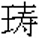
画过《耕图》二十一幅，《织图》二十四幅。[64] 仇英（1493—约1560） 字实父，号十洲，江苏太仓人，明代画家。他为之绘图的《飞燕外传》，传奇小说，题汉代伶玄撰，写赵飞燕姊妹的宫廷生活；《会真记》，传奇小说，唐代元稹作，写崔莺莺与张生的恋爱故事。
[65] 珂勒惠支夫人（1867—1945） 德国版画家。1936年，鲁迅曾用“三闲书屋”名义编选出版了《凯绥·珂勒惠支版画选集》。她作插图的《织匠》，是德国作家霍普特曼写的以纺织工人罢工为题材的剧本。
[66] 梅斐尔德（1903—？） 现代德国版画家。1930年，鲁迅曾用“三闲书屋”名义编印出版了《梅斐尔德木刻〈士敏土〉之图》。他作插图的《猎俄皇记》，俄国民粹派女革命家斐格纳尔（1852—1942）写的回忆录，记述1881年3月民粹派行刺沙皇亚历山大二世的故事。
[67] 麦绥莱勒（1889—1972） 比利时版画家。参看本书《〈一个人的受难〉序》及其注〔4〕。
[68] 罗曼·罗兰（Romain Rolland，1866—1944） 法国作家、社会活动家。著有长篇小说《约翰·克利斯朵夫》及传记《贝多芬传》等。第一次世界大战时他侨居瑞士，反对战争。
[70] “马戏的故事” 参看《二心集·风马牛》及其有关注。
[72] 本篇最初发表于1932年12月15日《文学月报》第一卷第五、六号合刊。
[73] 起应 即周扬（1908—1989），湖南益阳人，文艺理论家，“左联”领导成员之一。当时主编《文学月报》。
[74] 芸生 原名邱九如，浙江宁波人。他的诗《汉奸的供状》，载《文学月报》第一卷第四期（1932年11月），意在讽刺自称“自由人”的胡秋原的反动言论，但是其中有鲁迅在本文中所指出的严重缺点和错误。
[75] 别德纳衣的讽刺诗 指讽刺托洛茨基的长诗《没工夫唾骂》（瞿秋白译，载1932年10月《文学月报》第一卷第三期）。
[76] 对于姓的开玩笑 原诗开头是：“现在我来写汉奸的供状。据说他也姓胡，可不叫立夫”。按胡立夫是1932年“一·二八”日军侵占上海闸北时的汉奸，任敌伪“上海北市人民地方维持会”会长。
[77] “剖西瓜” 原诗中有这样的话：“当心，你的脑袋一下就要变做剖开的西瓜！”
[78] 德国的无产阶级革命 即德国十一月革命。1918年至1919年德国无产阶级、农民和人民大众在一定程度上用无产阶级革命的手段和形式进行的资产阶级民主革命。它推翻了霍亨索伦王朝，宣布建立社会主义共和国。随后，在社会民主党政府的血腥镇压下失败。
[79] “喜笑怒骂，皆成文章” 语出宋代黄庭坚《东坡先生真赞》。喜，原作嬉。
[80] 本篇最初印入1933年3月上海天马书店出版的《鲁迅自选集》。
这本《自选集》内收《野草》中的七篇：《影的告别》、《好的故事》、《过客》、《失掉的好地狱》、《这样的战士》、《聪明人和傻子和奴才》、《淡淡的血痕中》；《呐喊》中的五篇：《孔乙己》、《一件小事》、《故乡》、《阿Q正传》、《鸭的喜剧》；《彷徨》中的五篇：《在酒楼上》、《肥皂》、《示众》、《伤逝》、《离婚》；《故事新编》中的两篇：《奔月》、《铸剑》；《朝花夕拾》中的三篇：《狗·猫·鼠》、《无常》、《范爱农》。共计二十二篇。
[81] 《新青年》 参看本卷第312页注〔17〕。《新青年》最初的编辑是陈独秀。在北京出版后，主要成员有李大钊、鲁迅、胡适、钱玄同、刘复、吴虞等。随着五四运动的深入发展，《新青年》团体逐渐发生分化。鲁迅是这个团体中的重要撰稿人。
[82] “文学革命” 指“五四”时期反对旧文学，提倡新文学，反对文言文，提倡白话文的运动，是五四新文化运动的重要组成部分。
[83] 辛亥革命 1911年（辛亥）10月10日孙中山领导的资产阶级民主革命。它推翻了清王朝，结束了中国两千多年的封建君主统治，建立了中华民国。但旋被袁世凯窃取政权。
[84] 二次革命 1913年7月孙中山领导的反对袁世凯独裁统治的战争。因对1911年辛亥革命而言，所以称为“二次革命”。它很快就被袁世凯扑灭。
[85] 袁世凯称帝 袁世凯（1859—1916），河南项城人，北洋军阀首领。原为清朝大臣，他在攫取中华民国大总统职位后，于1916年1月实行帝制，自称皇帝，定年号为“洪宪”；同年三月被迫撤销。
[86] 张勋复辟 张勋（1854—1923），江西奉新人，北洋军阀之一。1917年6月，他在任安徽督军时，从徐州带兵到北京，7月1日和康有为等扶植清废帝溥仪复辟，7月12日即告失败。
[87] “绝望之为虚妄，正与希望相同” 原是匈牙利诗人裴多菲在1847年7月17日致友人弗里杰什·凯雷尼信中的话，鲁迅在《野草·希望》中曾引用。
[88] “路漫漫其修远兮，吾将上下而求索” 语出屈原《离骚》。鲁迅曾引用它作为《彷徨》的题辞。
[90] 本篇最初发表于1932年12月15日《文学月报》第一卷第五、六号合刊。该期出版衍期。
[91] 《时务报》 旬刊，1896年（清光绪二十二年）8月黄遵宪、汪康年创办于上海，梁启超主编，是当时宣传变法维新的主要刊物，1898年7月底改为官报，8月出至第六十九期停刊。
[92] 《福尔摩斯包探案》 英国作家柯南道尔（1859—1930）作的侦探小说。福尔摩斯是书中的主要人物。
[93] 《新小说》 月刊，1902年（清光绪二十八年）11月在日本横滨创刊，梁启超主编。1905年12月停刊，共出二卷二十四期。该刊除登载创作小说之外，也刊登翻译小说。
[94] 焦士威奴（1828—1905） 通译儒勒·凡尔纳，法国小说家。著有科学幻想及冒险小说《海底两万里》、《神秘岛》、《格兰特船长的女儿》等二十三种。
[95] 哈葛德（1856—1925） 英国小说家。林琴南曾依靠别人口述，用文言翻译过他的《迦茵小传》、《埃及金塔剖尸记》、《斐洲烟水愁城录》。
[96] 苏菲亚 即别罗夫斯卡娅（С.Л.Перовская，1853—1881），俄国女革命家，民意党领导人之一。因参加1881年3月1日暗杀沙皇亚历山大二世，于同年4月3日被沙皇政府杀害。清末中国无政府主义者所办的刊物《新世纪》第二十七号（1907年12月），曾介绍过她的事迹，刊出她的照片。
[97] 拉玛和吉利瑟那 今译罗摩和克释那，都是印度神话中的英雄人物。印度史诗《罗摩衍那》、《摩诃婆罗多》写有他们的故事。
[98] 《俄国戏曲集》 共学社丛书之一，1921年商务印书馆出版。它包括戏曲十种：果戈理的《巡按》（贺启明译），奥斯特洛夫斯基的《雷雨》（耿济之译），屠格涅夫的《村中之月》（耿济之译），托尔斯泰的《黑暗之势力》（耿济之译）和《教育之果》（沈颖译），契诃夫的《海鸥》（郑振铎译）、《伊凡诺夫》、《万尼亚叔父》和《樱桃园》（三者均耿式之译），史拉美克的《六月》（郑振铎译）。
[99] 《俄国文学研究》 《小说月报》第十二卷的增刊，1921年9月出版。内收郑振铎《俄国文学的启源时代》、耿济之《俄国四大文学家合传》、沈雁冰《近代俄国文学家三十人合传》、鲁迅《阿尔志跋绥甫》、郭绍虞《俄国美论及其文艺》、张闻天《托尔斯泰的艺术观》、沈泽民《俄国的叙事诗歌》等论文，以及鲁迅、瞿秋白、耿济之等所译俄国文学作品多篇。
[100] 《被压迫民族文学号》 即《被损害民族的文学号》，《小说月报》第十二卷第十期专刊，1921年10月出版。内收鲁迅译的《近代捷克文学概观》（捷克凯拉绥克作）和《小俄罗斯文学略说》（德国凯尔沛来斯作）、沈雁冰译的《芬兰的文学》（Hermione Ramsder作）、沈泽民译的《塞尔维亚文学概观》（Chedo Mijatovich作）、周作人译的《近代波兰文学概观》（波兰诃勒温斯奇作）等论文，以及鲁迅、沈雁冰等所译芬兰、保加利亚、波兰等国文学作品多篇。
[101] 指那时曾留学英美的某些绅士派学者如吴宓等人，参看《二心集·上海文艺之一瞥》中的有关论述。
[102] 关于创作是处女，翻译是媒婆的话，见《民铎》第二卷第五号（1921年2月）郭沫若致李石岑函：“我觉得国内人士只注重媒婆，而不注重处子，只注重翻译，而不注重产生。”
[103] 珂罗连珂（В.Г.Короленко，1853—1921） 通译柯罗连科，俄国作家。主要作品有小说《马尔加的梦》、《盲音乐家》、《我的同时代人的故事》等。
[104] 膜拜曼殊斐儿的绅士 指陈源。他曾在《新月》第一卷第四号（1928年6月）《曼殊斐儿》一文中，称英国女作家曼殊斐儿是“超绝一世的微妙清新的作家”，并介绍她的作品。后来，他根据英译本翻译屠格涅夫的《父与子》，1931年6月上海商务印书馆出版。
[105] 郭沫若曾根据德译本翻译列夫·托尔斯泰的《战争与和平》的一部分，1931年8月上海文艺书局出版。
[106] 为了卢布 参看本卷第9页注〔12〕及《二心集·“丧家的”“资本家的乏走狗”》。
[108] “破锣” 一些人对“普罗文学”的蔑称。“普罗”是Proletariat（无产阶级）的音译“普罗列塔利亚”的简称，当时一般称无产阶级革命文学为“普罗文学”。
[109] 《战后》 德国作家雷马克的小说《西线无战事》的续篇，当时有沈叔之的中译本，1931年8月上海开明书店出版。
[110] 希特拉（A.Hitler 1889—1945） 通译希特勒，德国法西斯头子，德国总理。下文的卐字旗，即德国法西斯的旗子。“卐”，纳粹党的党徽。
[111] 《死的胜利》 意大利作家邓南遮在1894年出版的小说，当时有芳信的中译本，1932年10月上海光华书局出版。
[112] 里培进斯基（Ю.Н.Либединский，1898—1959） 通译里别进斯基，苏联作家。所作《一周间》，当时我国有蒋光慈的译本，1930年1月北新书局出版。又有江思、苏汶的译本，1930年3月上海水沫书店出版。
[113] “复交” 国民党政府在1927年12月14日宣布和苏联断绝邦交，1932年12月12日宣布复交。
[114] “黑土” 苏联的黑土区面积广大，有以“黑土”作为它的代称的。如丹麦文艺批评家和文学史家乔治·勃兰兑斯（1842—1927），曾在他写的《俄国印象记》一书中称俄国为“黑土”。
[115] 指英国作家萧伯纳和法国作家罗曼·罗兰。罗曼·罗兰在俄国十月革命后对苏联持友好态度，1931年发表《与过去告别》一文，热烈支持无产阶级革命。萧伯纳，参看本书《谁的矛盾》及其注〔2〕。
[116] 本篇最初发表于1933年4月15日北平《文学杂志》第一号。
[117] 《东方杂志》 综合性刊物，1904年3月在上海创刊，1948年12月停刊，商务印书馆出版。它于1933年出的“新年特大号”（第三十卷第一期）中，辟有“新年的梦想”专栏。当时该刊的主编为胡愈之。
[118] 《东方杂志》记者在“新年的梦想”专栏的《读后感》中说：“近来有些批评家把文学分为‘载道’的文学和‘言志’的文学这两类。我们的‘梦’也可以同样的方法来分类：就是‘载道’的梦，和‘言志’的梦。”又说：“‘载道’的梦只是‘异端’，而‘言志’的梦才是梦的‘正宗’，因为我们相信‘梦’是个人的，而不是社会的。依据佛洛伊特的解释，梦只是白天受遏抑的意识，于睡眠，解放出来。……所以‘梦’只是代表了意识的‘不公开’的部分，在梦中说教，在梦中讲道，在梦中贴标语，喊口号，这到底是不常有的梦，至少这是白日梦而不是夜梦，所以不能算作梦的正宗。只有个人的梦，表现各人心底的秘密而不带着社会作用的，那才是正宗的梦。”按《东方杂志》记者所说的“近来有些批评家”指周作人，他在《中国新文学的源流》一书中，认为中国文学史是“载道”文学和“言志”文学的消长史。
[119] “盍各言尔志” 语出《论语·公冶长》：“颜渊、季路侍。子曰：‘盍各言尔志。’”孔子赞成曾点的话，见《论语·先进》：“子路、曾 （名点）、冉有、公西华侍坐。……子曰：‘何伤乎，亦各言其志也。’（曾点）曰：‘莫（暮）春者，春服既成，冠者五六人，童子六七人，浴乎沂，风乎舞雩，咏而归。’夫子喟然叹曰：‘吾与点也。’”
（名点）、冉有、公西华侍坐。……子曰：‘何伤乎，亦各言其志也。’（曾点）曰：‘莫（暮）春者，春服既成，冠者五六人，童子六七人，浴乎沂，风乎舞雩，咏而归。’夫子喟然叹曰：‘吾与点也。’”
[120] 佛洛伊特（S.Freud，1856—1939） 通译弗洛伊德，奥地利精神病学家，精神分析学说的创立者。这种学说认为文学、艺术、哲学、宗教等一切精神现象，乃至常人的梦，精神病患者的症状，都是人们因受压抑而潜藏在下意识中的某种“生命力”（Libido），特别是性欲的潜力所产生的。他的主要著作有《梦的解释》、《日常生活的病理心理学》、《精神分析引论》、《精神分析引论新编》等。
[121] Censors英语，原义为检查官，弗洛伊德精神分析学说用以表示阻止“潜意识”进入“意识”的压抑力。
[122] 名人 指在《东方杂志》“新年特大号”上“说梦”的一些国民党官员，如当时的铁道部次长、抗日战争中做了汉奸的曾仲鸣说：“何处是修竹、吾庐三径”；中国银行副总裁俞寰澄说：“我只想做一个略具知识的自耕农，我最酷爱田园生活”，等等。
[123] 本篇最初发表于1933年2月11日上海《涛声》第二卷第五期，署名罗怃。原题为《三十六计走为上计》。
[124] 周木斋（1910—1941） 江苏武进人，当时任上海大东书局编辑并从事写作。他的《骂人与自骂》，载《涛声》第二卷第四期（1933年1月21日），其中说：“最近日军侵占榆关，北平的大学生竟至要求提前放假，所愿未遂，于是纷纷自动离校。敌人未到，闻风远逸，这是绝顶离奇的了。……论理日军侵榆，……即使不能赴难，最低最低的限度也不应逃难。”又说：“写到这里，陡然的想起五四运动时期北京学生的锋芒，转眼之间，学风民气，两俱丕变，我要疑心是‘北京’改为‘北平’的应验了。”榆关，即山海关，1933年1月3日被日军占领。
[125] “上海各界欢迎段公芝老大会” 段祺瑞（字芝泉）在“九一八”后被聘为国难会议委员，1933年1月24日去上海时，上海市商会等十八个团体于2月17日为他举行欢迎会。
[127] 整顿风俗 段祺瑞政府曾多次颁行这类政令，如1925年8月25日发布的“整顿学风令”；1926年3月6日，西北边防督办张之江致电段祺瑞，主张“男女之防”“维风化而奠邦本”，段政府复电表示“嘉许”，并着手“根本整饬”。
[128] 陈源于三一八惨案发生后，在《现代评论》发表《闲话》，称爱国学生是被人利用，自蹈“死地”，还说所谓“宣传赤化”的人是“直接或间接用苏俄金钱”（见1926年5月8日《现代评论》第三卷第七十四期的《闲话》）。下文所说唐有壬的言论，参看本卷第115页注〔9〕。
[129] “必先安内而后可以攘外” 蒋介石在1931年11月30日国民党政府外长顾维钧宣誓就职会上的“亲书训词”中提出：“攘外必先安内，统一方能御侮。”（见1931年12月1日《中央日报》）此后，它成为国民党政府一贯奉行的积极反共，消极抗日的政策。
[130] 副司令 指张学良。他在1930年6月被任命为国民党政府陆海空军副司令。
[132] 十九路军 原为国民革命军第十一军，1930年改编为十九路军，蒋光鼐任总指挥，蔡廷锴任副总指挥兼军长。1932年“一·二八”事变时，该军驻防上海，奋起抗击日军的进攻，5月初按中日《淞沪停战协定》撤离上海。
[133] “满洲国” 日本帝国主义侵占我东北后于1932年3月在长春扶植的傀儡政权。
[134] “
 兔，遇犬获之” 语出《诗·小雅·巧言》。趯趯，跳跃的样子；毚兔，狡兔。
兔，遇犬获之” 语出《诗·小雅·巧言》。趯趯，跳跃的样子；毚兔，狡兔。
[135] 本篇最初发表于1933年2月16日上海《论语》第十一期，署名动轩。
[136] 故宫 指北京的明、清两朝皇宫，旧称“紫禁城”，始建于明永乐四年（1406）至十八年（1420）。1933年1月3日日军攻陷榆关（山海关），17日国民党政府决定将故宫所藏古物迁至南京等地。
[137] 团城 在北京北海公园南门旁的小丘上，有圆形城垣，故名。金时始建殿宇，元后屡有增修。白玉佛，置于团城承光殿内，由整块洁白的玉石雕刻而成，高约五尺，是具有很高艺术价值的珍贵文物。
[138] 这是作者的自称。1930年2月，作者参与发起中国自由运动大同盟，据传国民党浙江省党部曾向中央党部“呈请”通缉“堕落文人鲁迅”，作者于3月19日离寓避居一个月。参看《自传》（《集外集拾遗补编》）。
[139] 本篇最初发表于1933年4月1日《现代》第二卷第六期。
[141] “左联”五位作家被捕遇害的消息，《文艺新闻》第三号（1931年3月30日）以《在地狱或人世的作家？》为题，用读者致编者信的形式，首先透露出来。
[142] 林莽 即楼适夷（1905—2001），浙江余姚人，作家、翻译家。当时“左联”成员。
[143] 彼得斐（Petöfi Sándor，1823—1849） 通译裴多菲，匈牙利诗人。1849年在与协助奥地利侵略的沙俄军队作战争牺牲。一说在瑟什堡战役中与一批匈牙利士兵被俘，押至西伯利亚，约于1856年病卒。主要诗作有《勇敢的约翰》、《民族之歌》等。
[144] 《莱克朗氏万有文库》 德国莱克朗氏书店1867年始出版的文学丛书。
[146] “三道头” 上海公共租界巡官的俗称，其制服袖上缀有三道倒人字形标志，故称。
[147] 方孝孺（1357—1402） 浙江宁海人，明建文帝朱允炆时的侍讲学士、文学博士。建文四年（1402）建文帝的叔父燕王朱棣起兵攻陷南京，自立为帝（即永乐帝），命他起草即位诏书；他坚决不从，遂遭杀害，被灭十族。
[148] “人心惟危” 语出《尚书·大禹谟》：“人心惟危，道心惟微。”
[149] 商务印书馆在1932年“一·二八”战事中遭日军轰炸，大量书稿及藏书被毁。
[150] 中国游记 即美国记者安娜·路易斯·斯特朗所著的《中国纪行》（Chinàs Reise），1928年新德意志社出版。鲁迅于1930年12月2日购得，次年1月15日赠与白莽。
[151] 《说岳全传》 清代康熙年间的演义小说，题为钱彩编次，金丰增订，共八十回。该书第六十一回写镇江金山寺道悦和尚，因同情岳飞，秦桧就派“家人”何立去抓他。他正在寺内“升座说法”，一见何立，便口占一偈死去。“坐化”，佛家语，佛家传说有些高僧在临终前盘膝端坐，安然而逝，称作“坐化”。偈子，佛经中的唱词，也泛指和尚的隽语。
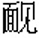
佛家语，梵文Nirvāna的音译，意为寂灭、解脱等，指佛和高僧的死亡，也叫圆寂。后来引申作死的意思。[153] 柔石被捕后，作者于1931年1月20日和家属避居黄陆路花园庄，2月28日回寓。
[154] 指王育和（1903—1971），浙江宁海人，曾任宁海中学教员。当时是上海沙逊大厦瑞商永丰洋行的职员，和柔石同住闸北景云里二十八号，柔石在狱中通过送饭人带信给他，由他送周建人转给作者。
[155] 日本歌人 指山本初枝（1898—1966）。据鲁迅1932年7月11日日记，作者将此诗书成小幅，托内山书店寄给她。
[156] 徐培根（1895—1991） 白莽的长兄。早年留学德国，曾任国民党政府军政部航空署长。鲁迅在《白莽作〈孩儿塔〉序》（《且介亭杂文末编》）中说：“我前一回的文章上是猜错的，这哥哥才是徐培根，航空署长，终于和他成了殊途同归的兄弟；他却叫徐白，较普通的笔名是殷夫。”按徐培根于1934年间因航空署失火焚毁一度被捕入狱。
[157] 向子期（约227—272） 向秀，字子期，河内（今河南武陟）人，魏晋时期文学家。他和嵇康、吕安友善。《思旧赋》是他在嵇、吕被司马昭杀害后所作的哀悼文章，共一百五十六字（见《文选》卷十六）。
[158] 本篇最初发表于1933年3月1日《论语》第十二期。
[159] 萧伯纳（1856—1950） 英国剧作家、批评家。出生于爱尔兰都柏林。早年参加过英国改良主义政治组织“费边社”。他在第一次世界大战爆发后，谴责帝国主义战争，同情俄国十月社会主义革命。1931年曾访问苏联。主要作品有剧本《华伦夫人的职业》、《巴巴拉少校》、《真相毕露》等，大都揭露和讽刺资本主义的伪善和罪恶。1933年他乘船周游世界，2月12日到香港，17日到上海。
[160] 牛兰（Naulen，1894—1963） 原名亚可夫·马特维耶维奇·鲁尼克（Яков Матвеевич Луник），生于乌克兰。1918年进入苏联“契卡”。1927年11月被共产国际派来中国从事秘密工作，化名牛兰，公开身分为“泛太平洋产业同盟”上海办事处秘书。1931年6月15日牛兰夫妇同在上海被公共租界警务处逮捕，8月移交国民党当局，关押于南京监狱。翌年5月以“危害民国”罪受审。牛兰于7月2日起进行绝食斗争。宋庆龄、蔡元培等曾组织“牛兰夫妇营救委员会”营救。1937年8月，侵华日军炮轰南京时逃出监狱，于1939年回国，曾任苏联红十字会对外联络部部长，大学教授等职。其夫人达吉亚娜·玛依仙柯（1891—1964）回国后从事语言研究和翻译工作。
[161] 本篇为日本改造社特约稿，原系日文，发表于1933年4月号《改造》。后由许霞（许广平）译成中文，经作者校定，发表于1933年5月1日《现代》第三卷第一期。
[162] 内山完造（1885—1959） 日本人，当时在上海开设主要出售日文书籍的内山书店。1927年10月他与鲁迅结识后常有交往。
[163] 蔡先生 即蔡元培（1868—1940），字鹤卿，号孑民，浙江绍兴人。近代教育家。当时是中国民权保障同盟领导人之一。
[164] 孙夫人 即宋庆龄（1893—1981），广东文昌人，政治家。
[165] 白俄的新闻 指《上海霞报》（Shanghai Zaria）1932年2月19日的一篇“文艺评论”述评：“前天欢迎萧伯的奢侈午饭……当然布置得非常之好，桌子旁边有数不清的仆人侍候着。”
[166] 笔会 带有国际性的著作家团体，1921年在伦敦成立。中国分会由蔡元培任理事长，1929年12月成立于上海，后来自行涣散。
[167] 梅兰芳博士 1930年梅兰芳赴美访问时，美国波摩那大学及南加州大学曾授予他文学博士的荣誉学位。
[168] 邵洵美（1906—1968） 浙江余姚人，诗人，曾出资创办金屋书店，主编《金屋月刊》，提倡唯美主义文学。著有诗集《花一般的罪恶》等。
[169] 张若谷（1905—1960） 江苏南汇（今属上海）人。他在1933年2月18日《大晚报》发表《五十分钟和伯纳萧在一起》一文，其中记述给萧伯纳送礼时的情形说：“笔会的同人，派希腊式鼻子的邵洵美做代表，捧了一只大的玻璃框子，里面装了十几个北平土产的泥制优伶脸谱，红面孔的关云长，白面孔的曹操，长胡子的老生，包扎头的花旦，五颜六色，煞是好看。萧老头儿装出似乎很有兴味的样子，指着一个长白胡须和他有些相像的脸谱，微笑着问道：‘这是不是中国的老爷？’‘不是老爷，是舞台上的老头儿。’我对他说。他好像没有听见，仍旧笑嘻嘻地指着一个花旦的脸谱说：‘她不是老爷的女儿吧？’”据张若谷自称，他所说的“舞台上的老头儿”，是讽刺萧伯纳的。
[170] 木村毅（1894—1979） 日本冈山县人，当时日本改造社的记者。在萧伯纳将到上海时，他被派前来采访，并约鲁迅为《改造》杂志撰写关于萧伯纳的文章。
[171] 英字新闻 指上海《字林西报》1933年2月18日的一段报导：“回答着关于被压迫民族和他们应当怎么干的问题，萧伯纳先生说：‘他们应当自己解决自己的问题，中国也应当这样干。中国的民众应当自己组织起来，并且，他们所要挑选的自己的统治者，不是什么戏子或者封建的王公’”。
[172] 日本字新闻 指上海《每日新闻》1933年2月18日的一段报导：“中国记者问：‘对于中国政府的你的意见呢？’——‘在中国，照我所知道，政府有好几个，你是指那一个呀？’”
[173] 汉字新闻 据《萧伯纳在上海·政治的凹凸镜》所引，当时上海有中文报纸曾报导萧伯纳的话说：“中国今日所需要者为良好政府，要知好政府及好官吏，绝非一般民众所欢迎”。
[174] 本篇最初印入1933年3月上海野草书屋出版的《萧伯纳在上海》。
《萧伯纳在上海》，乐雯（瞿秋白、鲁迅）编译，辑入上海中外报纸对于萧在上海停留期间的报导和评论。该书的《写在前面》说，编译此书的主要用意，是把它“当作一面平面的镜子，在这里，可以看看真的萧伯纳和各种人物自己的原形。”
[175] 泰戈尔 1924年4月曾来我国访问。毕力涅克1926年曾来我国。穆杭（1888—1976），又译莫朗，法国作家，1931年曾来我国。
[176] “专制使人们变成冷嘲” 英国哲学家约翰·穆勒（1806—1873）的话。鲁迅所译日本鹤见祐辅《思想·山水·人物》书中《说幽默》和《专门以外的工作》曾引用此话。
[177] “道路以目” 语出《国语·周语》：周厉王暴虐无道，“国人莫敢言，道路以目。”据三国时吴国韦昭注：“不敢发言，以目相眄而已。”
[178] 1933年2月20日，萧伯纳由上海到北平，同日英国路透社发出电讯说：“政府机关报（按指国民党政府的报纸）今晨载有大规模之战事正在发展中之消息，而仍以广大之篇幅，载萧伯纳抵北事，闻此足证华人传统的不感觉痛苦性。”
[179] 胡适的话，见1933年2月20日路透社另一电讯：“胡适之于萧氏抵平之前夕发表一文，其言曰，余以为对于特客如萧伯纳者之最高尚的欢迎，无过于任其独来独往，听渠晤其所欲晤者，见其所欲见者云。”
[180] “打是不打，不打是打！” 见宋代张耒《明道杂志》：“殿中丞丘浚，多言人也。尝在杭谒珊禅师。珊见之殊傲。俄顷，有州将子弟来谒，珊降阶接礼甚恭。浚不能平。子弟退，乃问珊曰：‘和尚接浚甚傲，而接州将子弟乃尔恭耶？’珊曰：‘接是不接，不接是接。’浚勃然起，掴珊数下，乃徐曰：‘和尚莫怪，打是不打，不打是打。’”
[181] 本篇最初发表于1933年3月16日《论语》第十三期，署名何干。
“学匪” 是1925年北京女师大风潮中一些人攻击鲁迅、马裕藻等进步教员的用语，参看本卷第254页注〔10〕。鲁迅在《华盖集续编·学界三魂》中曾说：“学界的打官话是始于去年，凡反对章士钊的都得了‘土匪’，‘学匪’，‘学棍’的称号”；“但这也足见去年学界之糟了，竟破天荒的有了学匪。”
[182] 《杂事秘辛》 笔记小说，一卷，旧题无名氏撰，伪托为东汉佚书，实为明代杨慎作。写东汉桓帝（刘志）选梁莹为妃的故事。其中有一段描写梁莹的脚：“足长八寸，
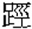
跗丰研，底平指敛，约缣迫袜，收束微如禁中。”杨慎在该书跋语中说：“予尝搜考弓足原始，不得。及见‘约缣迫袜，收束微如禁中’语，则缠足后汉已自有之。”杨是持缠足起源较早一说的。杨慎（1488—1554），字用修，号升庵，四川新都人，明代学者，正德进士，曾任翰林学士。[183] “利屣” 一种舞鞋。《史记·货殖列传》：“今夫赵女郑姬，设形容，揳鸣琴，揄长袂，蹑利屣，目挑心招。”
[184] “潭腿” 拳术的一种，相传由清代山东龙潭寺的和尚创立，故称。
[185] 炎汉 即汉代。过去阴阳家用金木水火土五行（也称五德）相生相克的循环变化来说明王朝更替；他们认为汉朝属火，故称“炎汉”。
[186] “小家碧玉” 语出南朝乐府《碧玉歌》：“碧玉小家女，不敢攀贵德”。碧玉原系人名，旧时常以“小家碧玉”称小康人家的少女。
[187] 《朝野佥载》 唐代张 作，内容系记载唐代的故事和琐闻。按该书没有鲁迅所引一事的记载。张（约658—约730），字文成，深州陆泽（今河北深州）人，唐代文学家。调露进士，曾官监察御史、司门员外郎等职。
作，内容系记载唐代的故事和琐闻。按该书没有鲁迅所引一事的记载。张（约658—约730），字文成，深州陆泽（今河北深州）人，唐代文学家。调露进士，曾官监察御史、司门员外郎等职。
[188] “除恶务尽” 语出《尚书·泰誓》：“树德欲滋，除恶务本。”“食肉寝皮”，语出《左传》襄公二十一年：“然二子者，譬如禽兽，臣食其肉而寝处其皮矣。”
[189] 语出《论语·子路》。据宋代朱熹注：“行，道也。狂者，志极高而行不掩。狷者，知未及而守有余。”
[190] “割不正不食”、“食不厌精，脍不厌细”、“不撤姜食”等语，都见《论语·乡党》。
[191] 孔子周游列国 孔子于鲁定公十二年至鲁哀公十一年（前498—前484）离开鲁国，周游宋、卫、陈、蔡、齐、楚等国，游说诸侯，终不见用。
[192] 花旗白面 由美国进口的面粉。“花旗”是我国民间对美国国旗的俗称，也指称美国。
[193] “忠孝仁爱信义和平” 当时国民党政要戴季陶等宣扬的所谓“八德”。国民党当局于1933年2月13日下令各级党部及机关团体将它制匾悬挂于礼堂中央；国民党政府教育部又于同月20日宣布以此为“小学公民训练标准”。
[194] “忘八” 封建时代流行的俗语，指忘记了概括封建道德要义的“孝、悌、忠、信、礼、义、廉、耻”八个字的最后一个“耻”字，也即“无耻”的意思。
[195] 《大晚报》 1932年2月12日在上海创刊，张竹平创办，后为国民党财阀孔祥熙收买，1949年5月25日停刊。
[196] 本篇最初印入1933年6月上海天马书店出版的《创作的经验》一书。
[197] 显克微支（1846—1916） 波兰作家。作品主要反映波兰农民的痛苦生活和波兰人民反对异族侵略的斗争。著有历史小说三部曲《火与剑》、《洪流》、《伏洛窦耶夫斯基先生》和中篇小说《炭画》等。
[198] 夏目漱石（1867—1916） 日本小说家，著有长篇小说《我是猫》、中篇小说《哥儿》等。森鸥外（1862—1922），日本小说家、文学评论家，著有小说《舞姬》等。
[199] 会馆 指北京宣武门外南半截胡同的“绍兴县馆”。1912年5月至1919年11月作者曾在此寄住。
[200] 陈独秀（1879—1942） 字仲甫，安徽怀宁（今属安庆）人，原为北京大学教授，《新青年》杂志的创办人，“五四”时期提倡新文化运动的主要人物。1921年中国共产党成立后任党的总书记。第一次国内革命战争后期，推行右倾投降主义路线，使革命遭到失败。以后他成为取消主义者，接受托派观点，成立反党小组织，1929年11月被开除出党。“五四”时期，他在致周作人的函件中，极力敦促鲁迅从事小说写作，如1920年3月11日信：“我们很盼望豫才先生为《新青年》创作小说，请先生告诉他。”又8月22日信：“鲁迅兄做的小说，我实在五体投地的佩服。”
[201] 花纸 绍兴方言，指一种流行于民间的木版年画，常见的有“八戒招赘”、“老鼠成亲”等题材。
[202] Stylist 英语：文体家。作者这里所指似为黎锦明。（1905—1999），湖南湘潭人，小说家。黎在《论体裁描写与中国新文艺》（见《文学周报》第五卷第二期，1928年2月合订本）一文中说：“西欧的作家对于体裁，是其第一安到著作的路的门径，还竟有所谓体裁家（Stylist）者。……我们的新文艺，除开鲁迅叶绍钧二三人的作品还可见到有体裁的修养外，其余大都似乎随意的把它挂在笔头上。”
[203] 一位道学的批评家 指胡梦华（1901—1983），安徽绩溪人，当时为南京东南大学学生。他在1922年10月24日《时事新报·学灯》上发表《读了〈蕙的风〉以后》，指责汪静之作的诗集《蕙的风》，认为其中某些情诗是“堕落轻薄”的作品，有“不道德的嫌疑”。参看《热风·反对“含泪”的批评家》。
[204] 这是东晋画家顾恺之的话，见南朝宋刘义庆《世说新语·巧艺》：“顾长康（按即顾恺之）画人，或数年不点目睛。人问其故，顾曰：‘四体妍蚩，本无关于妙处；传神写照，正在阿堵中。’”阿堵，当时俗语：这个。
[205] 本篇最初发表于1933年6月15日《申报月刊》第二卷第六号，署名洛文。
按本篇和下面一篇《真假堂吉诃德》以及《伪自由书》中的《王道诗话》、《伸冤》、《曲的解放》、《迎头经》、《出卖灵魂的秘诀》、《最艺术的国家》、《内外》、《透底》、《大观园的人才》，《准风月谈》中的《中国文与中国人》等十二篇文章，都是1933年瞿秋白在上海时所作，其中有的是根据鲁迅的意见或与鲁迅交换意见后写成的。鲁迅对这些文章曾作过字句上的改动（个别篇改换了题目），并请人誊抄后，以自己使用的笔名，寄给《申报·自由谈》等报刊发表，后来又分别将它们收入自己的杂文集。
[206] “堕马髻”、“愁眉啼妆” 见《后汉书·梁冀传》：东汉顺帝时大将军梁冀妻孙寿“色美而善为妖态，作愁眉唬（啼）妆、堕马髻。”据唐代李贤注引《风俗通》说：“愁眉者，细而曲折；唬妆者，薄拭目下若啼处；堕马髻者，侧在一边。”
[207] 阿剌伯古诗人 指穆塔纳比（Mutanabbi，915—965）。他在晚年写了一首无题的抒情诗，最后四句是：“美丽的女人给了我短暂的幸福，后来一片荒漠就把我们隔断开。世界上最好的地方——是骑在骏马的鞍上。而经书——则时时刻刻是最好的伴侣！”
[208] 长三幺二 旧时上海妓院中妓女的等级名称，头等的叫做长三，二等的叫做幺二。
[209] 本篇最初发表于1933年6月15日《申报月刊》第二卷第六号，署名洛文。
[210] 武士道 原指日本幕府时代武士所遵守的封建道德（忠君、节义、勇武、坚忍等）。西洋武士道，指西欧骑士精神。骑士，西欧中世纪封建时代的军人，属小封建主。他们自诩忠诚笃实，尚任侠，好冒险，崇尚爱情，艳羡贵妇。骑士盛行于十一至十四世纪，后因封建制解体和武器、战术的改进，渐趋没落。
[211] 堂·吉诃德仗着宝剑和风车打仗的事，见《堂吉诃德》第八章。
[212] 《儒林外史》第十二回写有娄姓两公子被张铁臂骗取白银五百两的事。
[213] “特制钢刀”的事，见1933年4月12日《申报》：上海有个叫王述的人，特别定制大刀九十九把，捐赠给当时防守喜峰口等处的宋哲元部队。
[214] 飞机捐 1933年1月，国民党政府决定举办航空救国飞机捐。随后，组织中华航空救国会（后改名为中国航空协会），在各地发行航空奖券，号召民众募捐。
[215] “诱敌深入” 九一八事变后，国民党政府采取“不抵抗”政策，不断丧失国土，却诡称是战略上的“诱敌深入”。这类宣传充斥于当时的官方报刊，如1933年2月6日南京《救国日报》的社论中说：“浸使政府为战略关系，须暂时放弃北平以便引敌深入聚而歼之……故吾主张政府应严厉责成张学良，使之以武力制止反对运动，若不得已，虽流血亦所不辞。”
[216] 慈禧太后（1835—1908） 即叶赫那拉氏，满族，咸丰帝妃，同治继位后被尊为太后，成为清末同治、光绪两朝的实际统治者。1888年（光绪十四年），她把建设北洋舰队的海军经费八千万两白银，移用于修建颐和园。
[217] “反日”爱国储金 1915年（民国四年）5月9日，袁世凯接受了日本帝国主义提出的侵略中国的“二十一条”，北京、上海等地群众为了反日救国，曾发起救国储金，并成立了救国储金团。但储金团却为袁世凯所把持，储金存入当时他所控制的中国银行和交通银行，并被他挪用为活动帝制的经费。
[218] “国货运动” 1933年，上海工商界发起将该年定为“国货年”，在元旦举行游行大会，并成立“国货商场”和“中华国货产销合作协会”，出版《国货周刊》，宣传“国货救国”。
[219] 金光明咒 指《金光明经》，佛经的一种。“九一八”以后，上海、北平等地国民党要人纷纷联名发起“金光明道场”之类的所谓“佛法救国”活动。1932年7月16日上海《时事新报》以《发起金光明道场戴季陶先生之“经咒救国”》为题，报导了这类活动。
[220] 岳飞奉旨不抵抗 岳飞在抗金中战功卓著，但主张议和的宋高宗（赵构）听信内奸秦桧的谗言，在一天内连下十二道金牌把他从前线召回，并以“谋反”的罪名将他下狱处死。
[221] 远庖厨 语出《孟子·梁惠王》：“君子之于禽畜也，见其生不忍见其死，闻其声不忍食其肉，是以君子远庖厨也。”
[222] 菲希德（J.G.Fichte，1762—1814） 通译费希特，德国哲学家。著有《知识学基础》、《人的天职》等。他主张用科技强化德意志民族，强调民族至上。
[223] 本篇最初发表于1933年8月19日《涛声》第二卷第三十一期。
李大钊的文稿经李乐光收集整理，其中三十篇于1933年辗转交上海群众图书公司出版，题名《守常全集》，并约请鲁迅作序，但在国民党统治下未能出版。1939年4月北新书局以“社会科学研究社”名义印出初版，但当即为租界当局没收。1949年7月仍由北新书局重印出书，改名为《守常文集》上册。
[224] 守常 李大钊（1889—1927），字守常，河北乐亭人，马克思列宁主义在中国最初的传播者，中国共产党创始人之一。曾任北京《晨钟报》总编辑、北京大学教授兼图书馆主任、《新青年》杂志编辑等。他领导了五四运动。1921年中国共产党成立后，一直负责北方区党的工作。1924年代表中国共产党与孙中山商谈国共合作，在帮助孙中山确定“联俄、联共、扶助农工”三大政策和改组国民党的工作中起了重要作用。1927年4月6日在北京被奉系军阀张作霖逮捕，28日与范鸿劼、路友于、谭祖尧、张挹兰（女）等十九人同时遇害。
[225] 这里应作“在广州”。作者于1927年1月16日离开厦门，18日到达广州。
[226] 1933年4月，北平群众在中国共产党的发动和领导下，为李大钊举行公葬。4月23日由宣武门外下斜街移柩赴香山万安公墓，途经西四牌楼时，国民党军警特务以“妨害治安”为名，禁止群众送葬，并开枪射击，送葬者有多人受伤，四十余人当场被捕。
[227] 四省 指东北的辽宁、吉林、黑龙江三省和当时的热河省（省会承德）。由于国民党当局推行“不抵抗”政策，张学良撤兵入关，日军自1931年“九一八”至次年二月占领东北全境，1933年3月又占领热河省。
[228] T先生 指曹聚仁（1900—1972），浙江浦江人，当时为上海暨南大学教授和《涛声》周刊编辑。参看鲁迅1933年5月4日致曹聚仁信。下文的G书局，指群众图书公司；C书局，指商务印书馆。
[229] 本篇最初发表于1933年7月1日上海《文学》第一卷第一号。
[230] 金圣叹（1608—1661） 名人瑞，字圣叹，原姓张，名采，吴县（今属江苏）人，明末清初文人。曾批改《西厢记》、《水浒传》等。据清代王应奎《柳南随笔》载：清顺治十八年（1661），“大行皇帝（按指顺治）遗诏至苏，巡抚以下，大临府治。诸生从而讦吴县令不法事，巡抚朱国治方暱令，于是诸生被系者五人。翌日诸生群哭于文庙，复逮系至十三人，俱劾大不敬，而圣叹与焉。当是时，海寇入犯江南，衣冠陷贼者，坐反叛，兴大狱。廷议遣大臣即讯并治诸生，及狱具，圣叹与十七人俱傅会逆案坐斩，家产籍没入官。闻圣叹将死，大叹诧曰：‘断头，至痛也。籍家，至惨也。而圣叹以不意得之，大奇！’于是一笑受刑，其妻子亦遣戍边塞云。”
[231] 袁宏道（1568—1610） 字中郎，湖广公安（今属湖北）人，明代文学家。他在《觞政》等文中肯定了小说、戏曲、民歌的地位，在《狂言》里的《读书》诗中，把《离骚》、《庄子》、《西厢》、《水浒》和《焚书》并列。金圣叹也曾以《离骚》为第一才子书，《南华经》（《庄子》）为第二才子书，《史记》为第三才子书，《杜诗》为第四才子书，《水浒》为第五才子书，《西厢记》为第六才子书。
[232] 《西厢》 全名《崔莺莺待月西厢记》，杂剧，元代王实甫作。金圣叹在批注《西厢》时，曾参校徐文长、徐士范、王伯良等较早的刻本，作了一些有根据的改动，但有些却是主观妄改的，如将篇末“谢当今盛明唐圣主”改为“谢当今垂帘双圣主”，则更是为了奉承清顺治皇帝及其母后而改的。
[233] 截去《水浒》的后小半 明中叶以后，《水浒传》有百回和一百二十回多种版本流行。明崇祯十四年（1641）左右，金圣叹把《水浒》七十一回以后的章节全部删去，另外伪造了一个“英雄惊噩梦”的结局（卢俊义梦见长人“嵇康”擒杀梁山首领一百零八人），又把第一回改为楔子，成为七十回本。
[234] 李自成（1606—1645） 陕西米脂人，明末农民起义军领袖。崇祯二年（1629）起义，崇祯十七年（1644）三月攻入北京，推翻明王朝。后明将吴三桂勾引清兵入关，李兵败退出北京。据清初彭孙贻《平寇志》等野史记载，李自成初进北京时，“贴安民榜云：‘大帅临城，秋毫无犯，敢有擅掠民财者，凌迟处死。’……民间大喜，安堵如故。”后来李自成退出北京时，“宫中火作，百姓知‘贼’走，必肆屠僇，各运器物，纵横堆塞胡同口，尽以木石支户”。
[235] 《武松独手擒方腊》 过去流行于民间的戏剧。按《水浒传》百回和一百二十回本，擒方腊的是鲁智深。
[236] 见《论语》第十七期《梳，篦，剃，剥及其他》：“近日报载四川通行民谣，描写军匪官僚搜括百姓之惨酷，可谓民国治绩的写照。童谣云：‘匪是梳子梳，兵是篦子篦，军阀就如剃刀剃，官府抽筋又剥皮。’”
[238] 本篇最初发表于1933年7月1日《文学》第一卷第一号。
[239] 戴望舒（1905—1950） 浙江杭县（今余杭）人，诗人。著有诗集《望舒草》、《灾难的岁月》等。他写的《法国通讯——关于文艺界的反法西斯蒂运动》，载《现代》第三卷第二期（1933年6月）。
[240] 纪德（A.Gide，1869—1951） 法国小说家。著有《窄门》、《地粮》、《田园交响曲》等。1932年初发表《日记抄》，其中称“对于现在及将来要发生的许多事件，尤其是苏联的状态，抱着太深切的关心”，并表示了对马克思主义的“兴趣”。
[241] 左拉（E.Zola，1840—1902） 法国作家。著有长篇小说《萌芽》、《崩溃》、《娜娜》等。1894年，法国的犹太籍军官德莱孚斯受到军事当局诬告，以泄漏军事机密罪被判处终身苦役。此事曾引起各界进步人士的不满。1897年，左拉对此案的材料作了研究后，确信德莱孚斯的无辜，就给总统佛尔写了一封《我控诉》的公开信，控诉法国政府、法庭和总参谋部违反法律和人权；由此他被判一年徒刑和罚金，因而逃往英国伦敦。
[242] 法朗士在左拉改葬时的讲演 在德莱孚斯事件中，法朗士曾和左拉一样为德莱孚斯进行辩护。1902年10月5日左拉安葬时，他发表演说，肯定左拉生前的正义行动，谴责当局对左拉的迫害。1906年7月19日德莱孚斯案件得到平反后，他又在法国“人权同盟”组织的向左拉“表示感谢并致敬”的群众集会（在左拉墓前举行）上发表第二次演说，称左拉为“伟大的公民”，号召人们不要忘记陷害无辜者的罪人，要“沿着正义和善良的道路前进”。并向法国国会提出建立“左拉先贤祠”法案的要求。（法朗士：《社会生活三十年》）按左拉原葬于巴黎蒙玛特公墓，后改葬于法国“先贤祠”。
[243] 1931年国民党政府杀害柔石等革命作家，当时国际革命作家如苏联法捷耶夫、法国巴比塞、美国辛克莱等人曾联名发表《革命作家国际联盟为国民党屠杀中国革命作家宣言》（《文学导报》第一卷第三期），抗议国民党的暴行。
[244] 指苏汶编的《文艺自由论辩集》。该书收入“第三种人”自己所写的文章和别人批评“第三种人”的文章共二十篇，1933年3月上海现代书局出版。
[245] 1933年5月13日，鲁迅和宋庆龄、杨杏佛等，到上海德国领事馆递交《为德国法西斯压迫民权摧残文化的抗议书》，次日并将抗议书在《申报》上发表。
[246] 本篇最初发表于1933年6月17日《涛声》第二卷第二十三期，署名罗怃。
[247] 《蜜蜂》 张天翼所作短篇小说。写一个养蜂场因蜂多花少，致使蜂群伤害了农民的庄稼，引起群众反抗的故事。小说发表后，陈思（曹聚仁）在《涛声》第二卷第二十二期（1933年6月10日）发表《“蜜蜂”》一文，其中说：“张天翼先生写《蜜蜂》的原起，也许由于听到无锡乡村人火烧华绎之蜂群的故事。那是土豪劣绅地痞流氓敲诈不遂的报复举动，和无锡农民全无关系；并且那一回正当苜蓿花开，蜂群采蜜，更有利于农事，农民决不反对的。乡村间的斗争，决不是单纯的劳资斗争，若不仔细分析斗争的成分，也要陷于错误的。希望张天翼先生看了我的话，实际去研究调查一下。”
[248] 本篇最初发表于1933年7月15日《申报月刊》第二卷第七号，署名洛文。
[249] 《本草纲目》 明代医药学家李时珍撰写的药物学著作，共五十二卷。这书是他在长期实践和实地调查的基础上，吸取人民群众的智慧和经验，参考大量医药资料和有关文献，费时近三十年才写成的。
[250] 神农皇帝 我国传说中的古代帝王。据《淮南子·修务训》：“古者民茹草饮水，采树本之实，食蠃蛖之肉，时多疾病毒伤之害。于是神农乃始教民播种五谷，相土地宜燥湿肥
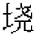
高下，尝百草之滋味，水泉之甘苦，令民知所避就。当此之时，一日而遇七十毒。”[252] 别人讥刺我怕死 梁实秋在《新月》第二卷第十一期发表的《鲁迅与牛》一文，借1930年4月8日中国自由运动大同盟为声援四·三惨案（英国人在南京打死打伤中国工人的惨案）集会时，一工人被巡捕枪杀的事讥笑作者说：“自由运动大同盟即是鲁迅先生领衔发起的，……这事发生之后，颇有人为鲁迅先生担心，因为不晓得流了‘一滩鲜血’的究竟是那一位。……幸亏事实不久大明，死的不是‘参加工农革命底实际行动’的‘左翼作家’，是一位‘勇敢的工人’……鲁迅先生的‘不卖肉主义’是老早言明在先的。”又法鲁在1933年6月11日《大晚报·火炬》发表的《到底要不要自由》中，也有这类含沙射影的话，参看《伪自由书·后记》。
[253] 本篇最初发表于1933年7月15日《申报月刊》第二卷第七号，署名洛文。
[254] 孙皓（242—283） 三国时吴国最后的皇帝。据《三国志·吴书·三嗣主传》，他在位时，“粗暴骄盈”，常无故杀戮臣子和宫人；降晋之后，被封为归命侯，甘受戏弄。《世说新语·排调》载：有一次，“晋武帝问孙皓：‘闻南人好作《尔汝歌》，颇能为不？’皓正饮酒，因举觞对帝而言曰：‘昔与汝为邻，今与汝为臣，上汝一杯酒，令汝寿万春！’”
[255] 宋徽宗（1082—1135） 即赵佶，北宋皇帝。在位时，横暴凶残，骄奢淫侈；靖康二年（1127）为金兵所俘，被封为“昏德公”，宫眷被“没为宫婢”。他虽备受侮辱，却还不断向“金主”称臣，“具表称谢”（见《靖康稗史·呻吟语》）。
[256] 1933年5月，广西民政厅曾公布法令，凡女子服装袖不过肘，裙不过膝者，均在取缔之列。
[257] 当时四川军阀杨森提倡“短衣运动”，他管辖下的营山县县长罗象翥曾发布《禁穿长衫令》。这里所引即见于该项令文，令文中还说：“着自四月十六日起，由公安局派队，随带剪刀，于城厢内外梭巡，遇有玩视禁令，仍着长服者，立即执行剪衣，勿稍瞻徇，倘敢有抗拒者，立即带县罚究，决不姑宽。”（1933年6月1日《论语》第十八期）
[258] “口含天宪” 语出《后汉书·朱穆传》：“当今中官近习，窃持国柄，手握王爵，口含天宪，运尝则使饿隶富于季孙，呼噏则伊、颜化为桀、跖。”据清代王先谦《后汉书集解》：“天宪，王法也，谓刑戮出于其口也。”
[259] 关于蜡人和活人下棋的事，见清朝出使各国考察政治大臣、礼部尚书戴鸿慈的《出使九国日记》（1906年北京第一书局出版）。该书“丙午（1906）正月二十一日”记有参观巴黎蜡人院的情况：“午后往观蜡人院，院中蜡人甚多，或坐或立，神志如生。最妙者：一蜡像前置棋枰，能与人对弈。如对手欺之，故下一子不如式，则像即停子不下，若不豫状。其仍不改，即以手将棋子扫之。巧妙至此，诚可叹也！”
[260] 康有为（1858—1927） 广东南海人，清末维新运动领袖。他主张君主立宪，后来组织保皇会，反对孙中山领导的民主革命运动。1904年至1908年，他周游意大利、瑞士、奥地利、匈牙利、德意志、法兰西、丹麦、瑞典、比利时、荷兰、英吉利等十一国。这里所说的事，见他的《欧东阿连五国游记·游塞耳维亚京悲罗吉辣》：“王宫三层，黄色颇丽，然临街，仅如一富家屋耳。往闻塞耳维亚内乱弑君后，惊其易，今观之，乱民一拥入室，即可行弑，如吾国乡曲行劫富豪，亦何难事。如以中国禁城之森严广大比之，则岂能顷刻成弑乎？”（见《不忍杂志汇编》二集卷四）
[261] 本篇最初发表于1933年8月15日《申报月刊》第二卷第八号，署名洛文。
[262] 《〈图书评论〉所评文学书部分的清算》 傅东华作，载《文学》第一卷第一号（1933年7月）。该文就《图书评论》一至九期发表的二十二篇文学书评进行分析和批评。
[263] 《图书评论》 月刊，刘英士编辑，1932年9月创刊，南京图书评论社出版。该刊发表的梁实秋、罗家伦等对当时一些外国文学译本的评论，往往抓住译文的个别错误，指斥为“荒谬绝伦”，“糊涂到莫名其妙”，“比毒药还要厉害”，“误人子弟，男盗女娼”等。
[264] “世无英雄，遂使竖子成名” 语出《晋书·阮籍传》：阮籍“尝登广武，观楚汉战处，叹曰：‘时无英雄，使竖子成名！’”
[265] 八极 《淮南子·墬形训》：“天地之间，九州八极。”八极，边远的地方，引伸为世界。
[266] 本篇最初发表于1933年8月15日《申报月刊》第二卷第八号，署名洛文。
[267] 跪香 旧时穷苦无告的人们手捧燃香，跪于衙前或街头，向官府“请愿”、鸣冤的一种方式。
[268] 这里所说“团结的人们”和下文“沙皇的胜者”，隐指日本帝国主义。
[269] “君子为猿鹤，小人为虫沙” 《太平御览》卷九一六引古本《抱朴子》：“周穆王南征，一军尽化，君子为猿为鹤，小人为虫为沙。”
[270] 本篇最初发表于1933年9月1日《文学》第一卷第三号。
文学社，即《文学》月刊社，参看本卷第430页注〔8〕。
[271] 伍实 即傅东华（1893—1971），浙江金华人，翻译家。当时《文学》的编者之一。
[272] 休士（L.Hughes，1902—1967） 美国黑人作家。1933年7月访苏返美途经上海时，上海的文学社、现代杂志社、中外新闻社等曾联合为他举行招待会。
[273] 本篇最初发表于1933年9月1日《现代》第三卷第五期。
[274] “美麦” 1933年6月，国民党政府为了进行“剿共”内战，由财政部长宋子文和美国复兴金融公司，在华盛顿签订了“棉麦借款”合同，规定借款五千万美元，其中五分之一购买美麦，五分之四购买美棉。
[275] 关于题材的积极性问题，当时曾有过讨论，1933年8月《文学》第一卷第二号“社谈”栏《文坛往何处去》一文就曾谈到：“其次是‘题材积极性’的问题。现在很有些人以为描写小资产阶级生活的题材便没有‘积极性’，必须写工农大众的生活，这才是题材有积极性；又以为仅仅描写大众的生活痛苦或是仅仅描写了他们怎样被剥削被压迫，也就不能说有积极性，必须写他们斗争才好，而且须写斗争得胜。究竟所谓‘题材的积极性’是否应当这样去理解呢，抑或别有理论？这也是当前问题的一个，亟待发展讨论，俾创作者可资参考。”
[276] 尉特甫格（1897—？） 德国学者，1934年迁居美国。他是中国问题研究者，著有《觉醒的中国》、《中国经济研究》以及与人合著的《中国社会史——辽史》等。
[277] 恩格勒 即恩格斯。明那·考茨基（1837—1912），通译敏娜·考茨基，德国社会民主党人，女作家，著有小说《格里兰霍夫的斯蒂凡》等。
[278] 这里所引恩格斯的话，见于1885年11月26日致明那·考茨基信，现译为：“此外，在当前条件下，小说主要是面向资产阶级圈子里的读者，即不直接属于我们的人的那个圈子里的读者，因此，如果一部具有社会主义倾向的小说通过对现实关系的真实描写，来打破关于这些关系的流行的传统幻想，动摇资产阶级世界的乐观主义，不可避免地引起对于现存事物的永世长存的怀疑，那末，即使作者没有直接提出任何解决办法，甚至作者有时并没有明确地表明自己的立场，但我认为这部小说也完全完成了自己的使命。”
[279] 本篇最初印入1933年9月上海良友图书印刷公司出版的《一个人的受难》。
[280] “长卷” 窄长的横幅卷轴国画。古来题名《长江万里》、《江山无尽》的长卷很多，著名的有宋代夏珪、明代周臣、清代王翚等人的作品。以陶渊明《归去来辞》为题材的长卷，有明代徐贲等人的作品。
[281] “死书”（The Book of the Dead） 又译“死者之书”，古代埃及宗教文艺的一种。本为王公、贵族的陪葬物。它将多种咒语、祷文、颂歌写在长卷纸上，置于死者棺中。许多“死书”还附有冥间的图画。
[282] 麦绥莱勒（1889—1972） 通译麦绥莱尔，比利时画家、木刻家。曾为美国惠特曼、法国罗曼·罗兰、巴比塞等作家的作品作插图。1933年9月，上海良友图书印刷公司还出版过他的连环画《光明的追求》、《我的忏悔》和《没有字的故事》。
[283] 陀密埃（1808—1879） 通译杜米埃，法国讽刺画家，擅长石版画。戈耶（1746—1828），西班牙讽刺画家，擅长铜版画。
[284] 耶稣的这段话，见《新约·马太福音》第十九章：“我实在告诉你们，财主进天国是难的。我又告诉你们，骆驼穿过针的眼，比财主进上帝的国还容易呢。”
[285] 本篇最初发表于1933年8月19日《涛声》第二卷第三十一期。
《涛声》，文艺性周刊。参看本卷第430页注〔8〕。
[287] 名列于该杀之林 1933年1月，作者参加中国民权保障同盟，并被举为执行委员，因此招致国民党的忌恨。同年6月，该盟副会长杨杏佛遭暗杀，作者也被列入黑名单。
[288] 这里说的民族主义文学家，指黄震遐。参看《二心集·“民族主义文学”的任务和运命》。
[289] “乌鸦为记”的刊物 《涛声》自第一卷第二十一期起，刊头上印有乌鸦的图案。
[290] “丧乱死多门” 语出唐代杜甫《白马》诗：“丧乱死多门，呜呼泪如霰。”死多门，指死于多种灾祸。
[291] “民亦劳止，汔可小康” 语出《诗经·大雅·民劳》。汔，庶几，差不多。
[292] 本篇最初发表于1933年9月15日《申报月刊》第二卷第九号，署名洛文。
[293] 《西游记》 长篇小说，明代吴承恩著，一百回。写唐僧（玄奘）在孙悟空等护送下到西天取经，沿途战胜妖魔险阻的故事。其中第四十七回《圣僧夜阻通天水 金木垂慈救小童》写通天河妖魔每年吃一对童男童女的故事。
[294] 梭罗古勃在长篇小说《小鬼》中，描写过一群早熟的少女。
[295] 本篇最初发表于1933年9月15日《申报月刊》第二卷第九号，署名洛文。
[296] 越界筑路 指当时上海租界当局越出租界范围以外修筑马路的区域。
[297] 本篇最初发表于1933年9月16日《论语》第二十五期。
《论语》，文艺性半月刊。参看本卷第430页注〔8〕。
[298] 语堂 林语堂（1895—1976），福建龙溪（今龙海）人，作家。曾留学美国、德国，早期是《语丝》撰稿人之一。三十年代在上海主编《论语》、《人间世》、《宇宙风》等刊物，提倡“幽默”、“闲适”和“性灵”的小品文。1936年居留美国，1966年定居台湾。
[299] “学而一章” “学而”是《论语》第一篇的题目。旧时的八股文，一般以《论语》等儒家经典中的语句命题。
[300] “费厄泼赖” 英语fair play的音译，意思是光明正大的比赛，不用不正当的手段。后来英国有人提倡将这种精神用于社会生活和党派斗争，认为这是每一个绅士应有的涵养和品德。林语堂在1925年12月14日《语丝》第五十七期发表的《插论语丝的文体——稳健，骂人，及费厄泼赖》一文中，说“中国‘泼赖’的精神就很少，更谈不到‘费厄’”，“对于失败者不应再施攻击，……以今日之段祺瑞、章士钊为例，我们便不应再攻击其个人”。作者在《坟·论“费厄泼赖”应该缓行》中曾批评过这一主张。
[301] “幽默” 英语humour的音译。林语堂从1932年9月创办《论语》起，就提倡“幽默”，说“《论语》发刊以提倡幽默为目标”（见《论语》第一期“群言堂”《“幽默”与“语妙”之讨论》）。又说：“俏皮到了冲澹含蓄而同情地，便成了幽默。”（第三期《编辑后记》）
[302] 圆桌会议 中世纪英国亚瑟王召集高级骑士开会时，为表示席次不分高下尊卑，采用圆桌会议的形式。后泛指与会者地位在形式上平等的会议。
[303] 唐伯虎（1470—1524） 名寅，吴县（今属江苏）人。徐文长（1521—1593），名渭，山阴（今浙江绍兴）人。两人都是明代文学家、画家。过去民间流传不少关于他们的笑话。
[304] 作者姓氏一大篇 过去有些杂志为了显示阵容的强大，常列出大批撰稿人名单。《论语》自第二期起，在刊头下印有“长期撰稿员”二十余人。
[305] 《萧的专号》 指1933年3月1日出版的《论语》第十二期《萧伯纳游华专号》。
[306] 列维它夫（М.Ю.Левидов，1891—1942） 苏联作家。他在《伯纳·萧的戏剧》一文中说：“说到萧和易卜生的对比，这也是自然的，因为，易卜生和萧是资产阶级戏剧创作的顶点。然而这个顶点——易卜生——被浓密的永久的云雾掩蔽着。易卜生——是个天才的问号‘？’，没有答案的问题，没有解决的疑问。……萧——却是个伟大的惊叹号‘！’——这一个顶点被斗争化的思想的灿烂光线镀了金了；对于他，提出疑问，也大半是伦理道德的疑问，就等于解决这个疑问，因为疑问的解决就包含在疑问的正确的提出，像蝴蝶的包含在蛹里面一样。”（据萧参译文）
[307] 达尔文在《人类起源和性的选择》第六章《论人类的血缘和谱系》中，描述过人类的始祖类人猿。
[308] 罗广廷 广西合浦县人。早年留学法国，曾得医学博士。二十世纪三十年代任中山大学生物教授时，发表《生物自然发生的发明》、《用真凭实据来答复进化论学者》等文章，用物种不变论质疑达尔文的进化学说，自称在“科学试验”中发现了“生物自然发生的奇迹”，说“由此推论，人猿，牛，猪……等生物，自然也是在古代某时某地的适应环境里产生的，而不是要经过几千亿兆年的进化才有的。”
[309] “达尔文的咬狗” 赫胥黎在达尔文发表《物种起源》受到攻击时，极力为达尔文辩护，他在1859年11月23日给达尔文的信中说：“至于那些要吠、要嗥的恶狗，你必须想到你的朋友们无论如何还有一定的战斗性……我正在磨利我的爪和牙，以作准备”。
[310] 亚当和夏娃 《圣经》故事中由上帝创造的人类始祖，见《旧约·创世记》第一章。
[311] 张园 旧时上海的一个公共游览场所，原为无锡张氏私人花园，故名。按当时上海赛狗的地方是在逸园、申园、明园等处。
[312] 庄生（约前369—前286） 即庄子，名周，战国时宋国人，道家思想主要代表人物。这里的引语，前两处见《庄子·齐物论》，后一处见《庄子·应帝王》。
[313] 甘地（M.Gandhi，1869—1948） 印度民族独立运动领袖。主张“非暴力抵抗”，以“不合作运动”对付英国殖民政府，屡遭监禁，在狱中多次绝食。1930年5月6日“路透电”曾说到英国殷芝开伯爵主张对他采用武力。
[314] 《孝经》 儒家经典之一，作者各说不一，当为孔门后学所作。下面的引语，出自该书《卿大夫》：“非先王之法服不敢服，非先王之法言不敢道，非先王之德行不敢行”，“三者备矣，然后能守其宗庙，盖卿大夫之孝也”。
[315] 《中庸》《大学》 儒家经书名，当时在上海以此为名出版的杂志有：《中庸》半月刊，徐心芹等主办，1933年3月创刊；《大学》月刊，林众可、丘汉平等编辑，1933年8月创刊。
[316] 本篇最初发表于1933年10月1日《现代》第三卷第六期。
[317] 《兰亭序》 即《兰亭集序》，晋代王羲之作，全文三百二十四字。
[318] 云冈 指云冈石窟，在山西大同武周山南麓，创建于北魏中期。现存主要洞窟五十三个，石雕佛像飞天等五万一千多个，其中最高的佛像达十七米。
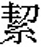
》 六朝骈体文选集，共四卷，清代许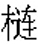
编选。[320] 黄河决口 1933年7月，山西、河南的一些黄河河段多次决口，淹数省五十余县，灾民四百余万人。
[321] 清言 三国时魏何晏、夏侯玄、王弼等以老庄思想解释儒家经义，崇尚虚无，摈弃世务，专谈玄理，读书人争相慕效，形成风气，叫作“清言”，也叫“清谈”或“玄言”。到晋代有王衍等人提倡，此风更盛。
[322] 罗隐（833—909） 字昭谏，余杭（今属浙江）人，晚唐文学家。著有《甲乙集》十卷、《谗书》五卷等。
[323] 皮日休（约834—约883） 字袭美，襄阳（今湖北襄樊市）人，晚唐文学家。早年隐居鹿门山，曾参加黄巢起义军。著有《皮子文薮》十卷。陆龟蒙（？—约881），字鲁望，姑苏（今江苏苏州）人，晚唐文学家。曾隐居笠泽，著有《笠泽丛书》四卷。
[324] 明末的小品 指晚明作家袁宏道、钟惺、张岱等人的小品文。
[326] 《大美晚报》 美国人在上海出版的英文报纸。1929年4月创刊，1933年1月增出中文版，1949年5月上海解放后停刊。
[327] 《生活》 周刊，中华职业教育社主办，1925年10月在上海创刊。1926年10月起由邹韬奋主编，1933年独立出版，同年12月受国民党当局密令停刊。
[328] 本篇最初发表于1933年10月15日《申报月刊》第二卷第十号，署名洛文。
[329] 秦桧（1090—1155） 江宁（今南京）人。宋钦宗时任御史中丞，曾被金兵俘虏，得金主信用，后被遣归。宋高宗（赵构）时任宰相，力主降金，是诬杀抗金名将岳飞的主谋。这里说他用麻条、鱼鳔逼供的事，见《说岳全传》第六十回。
[330] “为之斗斛以量之，则并与斗斛而窃之” 语出《庄子·胠箧》。文中的《老子》应作《庄子》。
[331] 张献忠（1606—1646） 延安柳树涧（今陕西定边东）人，明末农民起义领袖之一。旧史书常有渲染他杀人的记载。剥人皮的事，见清代彭遵泗著的《蜀碧》一书。
[332] 永乐皇帝 即明成祖朱棣。他原封燕王，起兵推翻建文帝朱允炆后称帝，建文帝的旧臣景清不肯顺从，朱棣“剥其皮，草椟之，械系长安门，磔其骨肉。”（见《明史记事本末》）
[333] 《铁流》 长篇小说，苏联作家绥拉菲摩维支著，描写苏联国内战争时期一支游击队在布尔什维克领导下斗争成长的故事。这里所引的情节，见该书第三十三章。
[334] 本篇最初发表于1933年10月15日《申报月刊》第二卷第十号，署名洛文。
漫与，随意而写。唐代杜甫《江上直水如海势，聊短述》：“为人性僻耽佳句，语不惊人死不休。老去诗篇浑漫与，春来花鸟莫深愁。”
[337] “再而衰，三而竭” 语出《左传》庄公十年：“一鼓作气，再而衰，三而竭。”
[338] “嚎丧” 作者曾讽刺“民族主义文学家”的诗为“送丧”时的“哭声”。参看《二心集·“民族主义文学”的任务和运命》。
[339] “蝴蝶铰” 旧式箱柜等家具挂锁处用的铜制蝴蝶状铰链。这里喻为连接物。
[340] “狂吠” 邵冠华攻击作者的话，见上海《新时代月刊》第五卷第三期（1933年9月）所载《鲁迅的狂吠》。
[341] “抗日英雄” 指马占山、苏炳文等人。九一八事变后，他们曾在东北局部抵抗过日军，博得“抗日英雄”的称号，各地人民曾捐款慰劳。但不久他们败退，脱离军队赴欧洲游历，1933年由德国返国，6月5日到上海。马占山在莫干山小住后即赴华北，苏炳文则寄寓苏州。马占山在上海时发表谈话说，他们在东北抗日时，仅收到捐款一百七十多万元，并于8月2日公布了账目清单；这与估计的约二千万元相去很远，因此引起舆论界的不满。当时曾发动清查运动，但并无结果。
[342] 本篇最初发表于1933年11月15日《申报月刊》第二卷第十一号，署名洛文。
[343] 毫不相干的女士 指金淑姿（1908—1931），浙江金华人。1932年程鼎兴为亡妻金淑姿刊行遗信集，托人请鲁迅写序。鲁迅所作的序，后编入《集外集》，题为《〈淑姿的信〉序》。
[344] 郑鄤（1594—1639） 字谦止，号峚阳，江苏武进（今常州市）人，明代天启年间进士。崇祯时温体仁诬告他不孝杖母，被凌迟处死。
[345] “官僚” 陈西滢讥讽作者的话，见1926年1月30日北京《晨报副刊》所载《致志摩》。
[346] 在1925年女师大风潮中，陈西滢诬蔑女师大学生可以“叫局”，1926年初，北京《晨报副刊》、《语丝》等不断载有谈论此事的文字。
[347] 三昧 佛家语，梵文Samādhi的音译，意为“定”。佛家修身方法之一，指专意聚神于一境的状态。也用以泛指事物的诀要或奥妙。唐李肇《国史补》中：“长沙僧怀素好草书，自言得草圣三昧。”
[348] 言筌 言语的迹象。《庄子·外物》：“荃（筌）者所以在鱼，得鱼而忘荃；……言者所以在意，得意而忘言。吾安得夫忘言之人而与之言哉！”
[349] 善知识 佛家语，据《法华文句》解释：“闻名为知，见形为识，是人益我菩提（觉悟）之道，名善知识。”
[351] 本篇最初发表于1933年11月15日《申报月刊》第二卷第十一号，署名洛文。
[352] 双十节 1911年10月10日，孙中山领导的革命党人举行武昌起义（即辛亥革命），次年1月1日建立中华民国。9月28日临时参议院议定10月10日为国庆节纪念日，又称“双十节”。
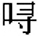
（1908—？ ）浙江吴兴人，“民族主义文学”的鼓吹者。当时在上海《时事新报》任职。他在1933年10月10日《时事新报》发表的《辛亥革命逸话》中说：“旗人谓九为钩。辛亥革命起，旗人皆变装图逃，杭人乃侦骑四出，遇可疑者，执而讯之，令其口唱‘九百九十九’，如为旗人，则音必读‘钩百钩十钩’也。乃杀之，百无一失。”旗人，清代对编入八旗的人的称呼，后来一般用以称呼满族人。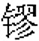
（852—932），五代时吴越国的国王。据宋代郑文宝《江表志》记载：“两浙钱氏，偏霸一方，急征苛惨，科赋凡欠一斗者多至徒罪。徐瑒尝使越云：‘三更已闻獐麂号叫达曙，问于驿吏，乃县司征科也。乡民多赤体，有被葛褐者，都用竹篾系腰间，执事非刻理不可，虽贫者亦家累千金。’”[355] 汤蛰仙（1856—1917） 名寿潜，字蛰仙，浙江山阴今绍兴，人。清末进士，武昌起义后曾被推为浙江省都督。
[356] 李鸿章（1823—1901） 安徽合肥人，清末北洋大臣，洋务派首领。1894年中日甲午战争发生，他避战求和，失败后与日本帝国主义签订丧权辱国的《马关条约》。易顺鼎在《劾权奸误国奏》中说：“李鸿章虽奸，尚不及其子李经方之甚。李经方前充出使日本大臣，……所纳外妇即倭主睦仁之甥女。……以权奸为丑虏内助，而始有用夷变夏之阶；以丑虏为权奸外援，而始有化家为国之渐。”按李经方系李鸿章之侄，曾娶一日本女子为妾。
[359] 沈佩贞 浙江杭州人，辛亥革命时组织“女子北伐队”，民国初年曾任袁世凯总统府顾问。
[360] 这是西方传入的一种仪式，叫掷瓶礼：在船舰、飞机首航前，由官眷或女界名流将一瓶系有彩带的香槟酒在船身或机身上掷碎，以示祝贺。
[361] 本篇最初发表于1933年12月15日《申报月刊》第二卷第十二号，署名洛文。
[362] 燧人氏 我国传说中的上古帝王，他发明钻木取火、教人熟食。
[363] 火神菩萨 我国传说中的火神有祝融、回禄等，他们的名字也用作火灾的代称。
[364] 秦始皇 嬴政（前259—前210），战国时秦国的国君，秦王朝的建立者。据《史记·秦始皇本纪》，他于公元前213年，采纳丞相李斯的建议下令焚书，凡“史官非秦记，皆烧之。非博士官所职，天下敢有藏《诗》、《书》、百家语者，悉诣守尉杂烧之。”
[365] 项羽（前232—前202） 名籍，下相（今江苏宿迁）人，秦末农民起义领袖之一。出身楚国贵族。据《史记·项羽本纪》，公元前206年他进兵秦国首都咸阳时，“烧秦宫室（按即阿房宫），火三月不灭。”
[366] 指罗马皇帝尼禄（C.C.Nero，37—68），相传他曾在公元64年放火焚烧罗马城。
[367] 指中世纪罗马天主教会对“异端”实行的火刑。由异端裁判所侦查和审判，旨在残害反教会、反封建而又不悔罪的“异端”。
[368] 希特拉 即希特勒。他于1933年1月30日出任德国总理，2月27日制造“国会纵火案”，焚烧国会大厦，嫁祸于德国共产党人，作为镇压共产党和革命人民的借口。
[369] 跨灶 马的前蹄下有个空隙，称灶门。快马奔驰时，后蹄蹄印落在前蹄蹄印之前，叫做“跨灶”。人们以此比喻儿子胜过父亲。
[370] 海京伯马戏团 德国驯兽家海京伯（C.Hagenbeck，1844—1913）创办的马戏团，1933年10月曾来我国上海表演。
[371] 本篇最初发表于1933年11月25日《涛声》第二卷第四十六期，署名旅隼。
[372] 麦绥莱勒的连环图画四种 参看本书《〈一个人的受难〉序》及其注〔4〕。
[373] 《中国文艺年鉴》 指1932年《中国文艺年鉴》，杜衡、施蛰存以“中国文艺年鉴社”名义编选，上海现代书局出版。“鸟瞰”，指该书中的《一九三二年中国文坛鸟瞰》一文。其中说：“苏汶……对旧形文艺（举例说，是连环图画）的艺术价值表示怀疑。因辩解这种怀疑，鲁迅便发表了他的《连环图画辩护》，他告诉苏汶说，像德国板画那种连环图画也是有艺术价值的。但是鲁迅无意中却把要是德国板画那类艺术品搬到中国来，是否能为一般大众所理解，即是否还成其为大众艺术的问题忽略了过去，而且这种解答是对大众化的正题没有直接意义的。”
[374] 立方派 即立体派，二十世纪初形成于法国的一种艺术流派。它反对客观地描绘事物，强调多面表现物体的立体形态，主张以几何学图形（立方体、球体和圆锥体等）作为造型艺术的基础，作品构图怪诞。
[375] 未来派 二十世纪初形成于意大利的一种艺术流派。它否定文化遗产和一切传统，强调面向未来，表现现代机械文明、力量和速度；用离奇的形式表现动态的直觉和凌乱的想象，作品多难于理解。
[376] 《士敏土之图》 即《梅斐尔德木刻士敏土之图》，共十幅，鲁迅自费影印，1930年9月以“三闲书屋”名义出版。
[377] 这是施蛰存在《推荐者的立场》一文中的话，鲁迅曾将该文录入《准风月谈·扑空》的“备考”。
[378] 本篇在收入本书前未在报刊上发表过。
《木刻创作法》，白危编译的关于木刻的入门书，1937年1月上海读书生活出版社出版。
[379] 傅兰雅（J.Fryer，1839—1928） 英国教士。1861年（清咸丰十一年）来我国传教，曾任北京同文馆英文教习。1875年（清光绪元年）在上海与人合办“格致书院”，次年出版专刊西方自然科学论著摘要和科学情报资料的《格致汇编》（季刊），时断时续，至1892年共出二十八本。该刊附有大量刻工精细的插图。
[381] 这是施蛰存在《“庄子”与“文选”》一文中讥讽鲁迅的话：“新文学家中，也有玩木刻，考究版本，收罗藏书票，以骈体文为白话书信作序，甚至写字台上陈列了小摆设的，照丰先生的意见说来，难道他们是要以‘今雅’立足于天地之间吗？”鲁迅曾将该文录入《准风月谈·“感旧”以后（上）》的“备考”。
[382] 本篇最初发表于1933年12月15日《申报月刊》第二卷第十二号，署名洛文。
[383] 逢蒙杀羿 见《孟子·离娄》：“逄蒙学射于羿，尽羿之道；思天下惟羿为愈己，于是杀羿。”按逄蒙亦作逢蒙。
[384] 指1930年写的《做古文和做好人的秘诀》，后收入《二心集》。
[385] 《尔雅》 我国最早解释词义的书，大概成书于春秋至西汉初年，今本十九篇。《文选》，南朝梁昭明太子萧统编选的从先秦到齐、梁的各体文章的总集，共六十卷。
[386] 《康熙字典》 清代康熙年间张玉书等奉旨编撰，共四十二卷，收四万七千余字，1716年（康熙五十五年）开始印行。
[387] 班马 指班固、司马迁。他们都是汉代史学家、文学家。
[388] “紫色声，余分闰位” 语出《汉书·王莽传》，指王莽“篡位”这件事。据唐代颜师古注：“应劭曰：紫，间色；，邪音也。服虔曰：言莽不得正王之命，如岁月之余分为闰也。”
[389] 扬雄（前53—18） 一作杨雄，字子云，成都（今属四川）人，西汉文学家、语言文字学家。他的著作，明人辑有《杨子云集》五卷。“蠢迪检柙”，语出《法言·序》。据东晋李轨注：“蠢，动也；迪，道也；捡押，犹隐括也。言君子举动，则当蹈规矩。”按捡押，当作检柙。
[390] 《绿野仙踪》 长篇小说，清代李百川著。这里所说塾师咏“花”的故事，见于该书第六回《评诗赋大失腐儒心》。
[391] “知耻近乎勇” 语出《礼记·中庸》：“子曰：“好学近乎知，力行近乎仁，知耻近乎勇。知斯三者，则知所以修身。”
[392] 骈四俪六 指骈作文，以四字和六字式相间对偶排比，讲究声律和词藻。骈即并列、对偶，俪即双句、偶句。唐代柳宗元《乞巧文》：“骈四俪六，锦心绣口。”
[393] 本篇最初发表于1934年1月15日《申报月刊》第三卷第一号，署名罗怃。
心传，佛教禅宗用语，指不立文字，不依经卷，只凭师徒心心相印来传法授受。
[394] 罗两峰（1733—1799） 名聘，字遯夫，江苏甘泉（今江都）人，清代画家。《鬼趣图》，是八幅讽刺世态的画，当时不少文人曾为它题咏。
[395] 这里所说的山中厉鬼，见南朝宋人郭季产的《集异记》：“中山刘玄，居越城。日暮，忽见一人著乌褶来，取火照之，面首无七孔，面莽傥然。”（据鲁迅《古小说鉤沈》）
[396] 骆宾王（约640—？） 婺州义乌（今属浙江）人，唐代诗人。曾随徐敬业反对武则天，著有《代徐敬业讨武曌檄》。据《新唐书·骆宾王传》，他“为敬业传檄天下，斥武后罪。后读，但嘻笑”。
[397] 高长虹在《狂飙》第十七期（1927年1月）发表的《我走出了化石的世界》中说：“若夫其他琐事，如狂飙社以直报怨，则鲁迅不特身心交病，且将身败名裂矣！我们是青年，我们有的是同情，所以我们决不为已甚。”
[398] 本篇最初发表于1934年1月15日《申报月刊》第三卷第一号，署名罗怃。
[399] 这段话见《礼记·檀弓下》：“骨肉归复于土，命也；若魄气则无不之也，无不之也！”
[400] “拔宅飞升” 据《全后汉文》中的《仙人唐公房碑》记载，相传唐公房认识一个仙人，能获得“神药”。有一次，他触怒了太守，太守想逮捕他和他的妻子，“公房乃先归于谷口，呼其师告以危急。其师与之归，以药饮公房妻子曰：‘可去矣。’妻子恋家不忍去。又曰：‘岂欲得家俱去乎？’妻子曰：‘固所愿也。’于是乃以药涂屋柱，饮牛马六畜。须臾有大风玄云来迎，公房妻子，屋宅六畜，翛然与之俱去。”又东晋葛洪《神仙传》也载有关于汉代淮南王刘安的类似传说，参看本卷第236页注〔4〕。
[401] 本篇在收入本书前未在报刊上发表过。
《总退却》，葛琴的短篇小说集，1937年3月上海良友图书印刷公司出版，内收短篇小说七篇，与鲁迅作序时的篇目有出入。葛琴（1907—1995），江苏宣兴人，女作家，“左联”成员。
[402] “有闲，即是有钱” 这是李初梨讥讽作者的话，参看本卷第8页注〔8〕。
[404] 《文化列车》 文艺性五日刊，方含章、陈栾合编，1933年12月1日在上海创刊，1934年3月25日出至第十二期停刊。
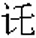
人（1901—1955） 广东潮安人。1925年加入中国共产党，1928年参加太阳社，1932年叛变革命。[406] 诸葛亮（181—234） 字孔明，琅玡阳都（今山东沂南）人，三国时政治家、军事家，蜀汉丞相。在《三国演义》中，他是一个具有高度智慧和谋略的典型人物。
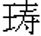
应作李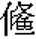
，即曹艺（1909—2000），浙江浦江人，曹聚仁之弟。他的《读〈伪自由书〉》一文，发表于《涛声》第二卷第四十期（1933年10月21日）。下文的李又燃，即李又然（1906—1984），原名李家齐，浙江慈溪人，作家。[408] “人群的蟊贼” 这是《社会新闻》第五卷第十三期（1933年11月）署名“莘”的《读〈伪自由书〉后》中谩骂鲁迅的话。
[409] 魏延（？—234） 三国义阳（今属河南）人，蜀国大将。《三国演义》一〇五回载：“孔明识魏延脑后有反骨，每欲斩之；因怜其勇，故姑留用。”诸葛亮死后不久，他就谋反；长史杨仪按诸葛亮生前预定计策，将他杀掉。
[410] 阿斗 三国蜀后主刘禅（207—271）的小名。据史书记载和《三国演义》中的描写，他是一个昏庸无能的人。后降魏。
[411] “小资产阶级文学革命” 杨邨人在《现代》第二卷第四期（1933年2月）发表《揭起小资产阶级革命文学之旗》一文中说：“无产阶级已经树起无产阶级文学之旗，而且已经有了巩固的营垒，我们为了这广大的小市民和农民群众的启发工作，我们也揭起小资产阶级革命文学之旗，号召同志，整齐阵伍，也来扎住我们的阵营。……我们也承认着文艺是有阶级性的，而且也承认着属于某一阶级的作家的作品任是无意地也是拥护着其自身所属的阶级的利益。我们是小资产阶级的作家，我们也就来作拥护着目前小资产阶级的小市民和农民的群众的利益而斗争。”
[412] “自白” 指杨邨人叛变革命的《离开政党生活的战壕》一文（载1933年2月上海《读书杂志》第三卷第一期）。其中说：“回过头来，看我自己，父老家贫弟幼，漂泊半生，一事无成，革命何时才成功。我的家人现在在作饿殍不能过日，将来革命就是成功，以湘鄂西苏区的情形来推测，我的家人也不免作饿殍作叫化子的。还是：留得青山在，且顾自家人吧了！病中，千思万想，终于由理智来判定，我脱离中国共产党了。”
[413] 这里指杨邨人于1930年在他自己所办的《白话小报》第一期上，以“文坛小卒”的笔名发表的《鲁迅大开汤饼会》一文。其中对鲁迅造谣诋毁说：“这时恰巧鲁迅大师领到当今国民政府教育部大学院的奖赏；于是乎汤饼会便开成了。……这日鲁迅大师的汤饼会到会的来宾，都是海上闻人，鸿儒硕士，大小文学家呢。那位郁达夫先生本是安徽大学负有责任的，听到这个喜讯，亦从安庆府连夜坐船东下呢。郁先生在去年就产下了一个虎儿，这日带了郁夫人抱了小娃娃到会，会场空气倍加热闹。酒饮三巡，郁先生首先站起来致祝辞，大家都对鲁迅大师恭喜一杯，鲁迅大师谦逊着致词，说是小囝将来是龙是犬还未可知，各位今天不必怎样的庆祝啦。座中杨骚大爷和白薇女士同声叫道，一定是一个龙儿呀！这一句倒引起郁先生的伤感，他前年不幸夭殇的儿子，名字就叫龙儿呢！”
[414] 《新儒林外史》 这是杨邨人化名柳丝所作攻击鲁迅的文章，载1933年6月17日《大晚报·火炬》。其中诬称鲁迅对他的批判是“手执大刀”、“是非不分”的“乱砍乱杀”。
[415] 陈源教授的余唾 陈源曾在1926年1月30日《晨报副刊》发表《闲话的闲话之闲话引出来的几封信》，其中说鲁迅，“他没有一篇文章里不放几支冷箭儿”。
[416] “以怨报德” 语出《礼记·表记》：“以怨报德，则刑戮之民也。”
注 释
[403] 本篇在收入本书前未在报刊上发表过。
[404] 《文化列车》 文艺性五日刊，方含章、陈栾合编，1933年12月1日在上海创刊，1934年3月25日出至第十二期停刊。
[405] 杨人（1901—1955） 广东潮安人。1925年加入中国共产党，1928年参加太阳社，1932年叛变革命。
[406] 诸葛亮（181—234） 字孔明，琅玡阳都（今山东沂南）人，三国时政治家、军事家，蜀汉丞相。在《三国演义》中，他是一个具有高度智慧和谋略的典型人物。
[407] 李 应作李，即曹艺（1909—2000），浙江浦江人，曹聚仁之弟。他的《读〈伪自由书〉》一文，发表于《涛声》第二卷第四十期（1933年10月21日）。下文的李又燃，即李又然（1906—1984），原名李家齐，浙江慈溪人，作家。
[408] “人群的蟊贼” 这是《社会新闻》第五卷第十三期（1933年11月）署名“莘”的《读〈伪自由书〉后》中谩骂鲁迅的话。
[409] 魏延（？—234） 三国义阳（今属河南）人，蜀国大将。《三国演义》一〇五回载：“孔明识魏延脑后有反骨，每欲斩之；因怜其勇，故姑留用。”诸葛亮死后不久，他就谋反；长史杨仪按诸葛亮生前预定计策，将他杀掉。
[410] 阿斗 三国蜀后主刘禅（207—271）的小名。据史书记载和《三国演义》中的描写，他是一个昏庸无能的人。后降魏。
[411] “小资产阶级文学革命” 杨邨人在《现代》第二卷第四期（1933年2月）发表《揭起小资产阶级革命文学之旗》一文中说：“无产阶级已经树起无产阶级文学之旗，而且已经有了巩固的营垒，我们为了这广大的小市民和农民群众的启发工作，我们也揭起小资产阶级革命文学之旗，号召同志，整齐阵伍，也来扎住我们的阵营。……我们也承认着文艺是有阶级性的，而且也承认着属于某一阶级的作家的作品任是无意地也是拥护着其自身所属的阶级的利益。我们是小资产阶级的作家，我们也就来作拥护着目前小资产阶级的小市民和农民的群众的利益而斗争。”
[412] “自白” 指杨邨人叛变革命的《离开政党生活的战壕》一文（载1933年2月上海《读书杂志》第三卷第一期）。其中说：“回过头来，看我自己，父老家贫弟幼，漂泊半生，一事无成，革命何时才成功。我的家人现在在作饿殍不能过日，将来革命就是成功，以湘鄂西苏区的情形来推测，我的家人也不免作饿殍作叫化子的。还是：留得青山在，且顾自家人吧了！病中，千思万想，终于由理智来判定，我脱离中国共产党了。”
[413] 这里指杨邨人于1930年在他自己所办的《白话小报》第一期上，以“文坛小卒”的笔名发表的《鲁迅大开汤饼会》一文。其中对鲁迅造谣诋毁说：“这时恰巧鲁迅大师领到当今国民政府教育部大学院的奖赏；于是乎汤饼会便开成了。……这日鲁迅大师的汤饼会到会的来宾，都是海上闻人，鸿儒硕士，大小文学家呢。那位郁达夫先生本是安徽大学负有责任的，听到这个喜讯，亦从安庆府连夜坐船东下呢。郁先生在去年就产下了一个虎儿，这日带了郁夫人抱了小娃娃到会，会场空气倍加热闹。酒饮三巡，郁先生首先站起来致祝辞，大家都对鲁迅大师恭喜一杯，鲁迅大师谦逊着致词，说是小囝将来是龙是犬还未可知，各位今天不必怎样的庆祝啦。座中杨骚大爷和白薇女士同声叫道，一定是一个龙儿呀！这一句倒引起郁先生的伤感，他前年不幸夭殇的儿子，名字就叫龙儿呢！”
[414] 《新儒林外史》 这是杨邨人化名柳丝所作攻击鲁迅的文章，载1933年6月17日《大晚报·火炬》。其中诬称鲁迅对他的批判是“手执大刀”、“是非不分”的“乱砍乱杀”。
[415] 陈源教授的余唾 陈源曾在1926年1月30日《晨报副刊》发表《闲话的闲话之闲话引出来的几封信》，其中说鲁迅，“他没有一篇文章里不放几支冷箭儿”。
[416] “以怨报德” 语出《礼记·表记》：“以怨报德，则刑戮之民也。”